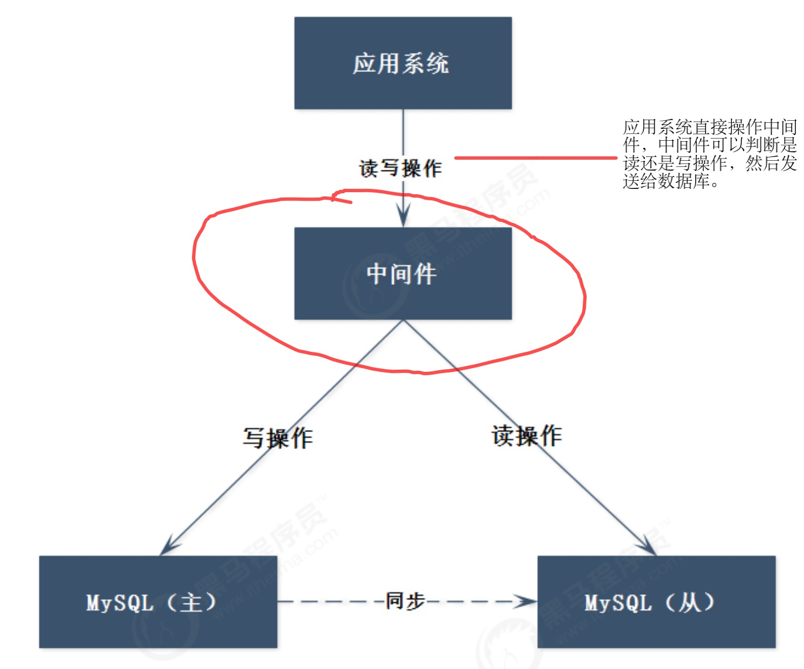

<!DOCTYPE html>
<html lang=zh>
<head>
  <meta charset="utf-8">
  
  <meta http-equiv="X-UA-Compatible" content="IE=edge,chrome=1">
  <meta name="viewport" content="width=device-width, initial-scale=1, maximum-scale=1, minimum-scale=1, user-scalable=no, minimal-ui">
  <meta name="renderer" content="webkit">
  <meta http-equiv="Cache-Control" content="no-transform" />
  <meta http-equiv="Cache-Control" content="no-siteapp" />
  <meta name="apple-mobile-web-app-capable" content="yes">
  <meta name="apple-mobile-web-app-status-bar-style" content="black">
  <meta name="format-detection" content="telephone=no,email=no,adress=no">
  <!-- Color theme for statusbar -->
  <meta name="theme-color" content="#000000" />
  <!-- 强制页面在当前窗口以独立页面显示,防止别人在框架里调用页面 -->
  <meta http-equiv="window-target" content="_top" />
  
  
  <title>Mysql集群搭建入门学习 | Hexo</title>
  <meta name="description" content="Mysql集群搭建一、系统框架存在的问题我们的系统框架中，DBserver我们只使用了单节点服务，而面对高并发、海量数据的时候显然存在很严重的问题，所以我们要实现Mysql集群的搭建 二、Mysql集群搭建方案1.读写分离数据库要求一般“读多写少”，所以一个思路就是：一个主库负责写，成为写库；其他数据库负责读，成为读库。 实现的要求：  读库写库数据必须一致 读数据必须到读库 写数据必须到写库">
<meta property="og:type" content="article">
<meta property="og:title" content="Mysql集群搭建入门学习">
<meta property="og:url" content="http://example.com/2020/12/07/Mysql%E9%9B%86%E7%BE%A4%E6%90%AD%E5%BB%BA%E5%85%A5%E9%97%A8%E5%AD%A6%E4%B9%A0/index.html">
<meta property="og:site_name" content="Hexo">
<meta property="og:description" content="Mysql集群搭建一、系统框架存在的问题我们的系统框架中，DBserver我们只使用了单节点服务，而面对高并发、海量数据的时候显然存在很严重的问题，所以我们要实现Mysql集群的搭建 二、Mysql集群搭建方案1.读写分离数据库要求一般“读多写少”，所以一个思路就是：一个主库负责写，成为写库；其他数据库负责读，成为读库。 实现的要求：  读库写库数据必须一致 读数据必须到读库 写数据必须到写库">
<meta property="og:locale" content="zh_CN">
<meta property="og:image" content="http://example.com/2020/12/07/Mysql%E9%9B%86%E7%BE%A4%E6%90%AD%E5%BB%BA%E5%85%A5%E9%97%A8%E5%AD%A6%E4%B9%A0/mysql01.png">
<meta property="og:image" content="http://example.com/2020/12/07/Mysql%E9%9B%86%E7%BE%A4%E6%90%AD%E5%BB%BA%E5%85%A5%E9%97%A8%E5%AD%A6%E4%B9%A0/Mysql-SpringAOP.png">
<meta property="og:image" content="http://example.com/2020/12/07/Mysql%E9%9B%86%E7%BE%A4%E6%90%AD%E5%BB%BA%E5%85%A5%E9%97%A8%E5%AD%A6%E4%B9%A0/Mysql-Mycat.png">
<meta property="og:image" content="http://example.com/2020/12/07/Mysql%E9%9B%86%E7%BE%A4%E6%90%AD%E5%BB%BA%E5%85%A5%E9%97%A8%E5%AD%A6%E4%B9%A0/Mysql-Mycat02.png">
<meta property="og:image" content="http://example.com/2020/12/07/Mysql%E9%9B%86%E7%BE%A4%E6%90%AD%E5%BB%BA%E5%85%A5%E9%97%A8%E5%AD%A6%E4%B9%A0/Mysql-haproxy.png">
<meta property="og:image" content="http://example.com/2020/12/07/Mysql%E9%9B%86%E7%BE%A4%E6%90%AD%E5%BB%BA%E5%85%A5%E9%97%A8%E5%AD%A6%E4%B9%A0/Mysql-PXC.png">
<meta property="og:image" content="http://example.com/2020/12/07/Mysql%E9%9B%86%E7%BE%A4%E6%90%AD%E5%BB%BA%E5%85%A5%E9%97%A8%E5%AD%A6%E4%B9%A0/Mysql-ending.png">
<meta property="og:image" content="http://example.com/2020/12/07/Mysql%E9%9B%86%E7%BE%A4%E6%90%AD%E5%BB%BA%E5%85%A5%E9%97%A8%E5%AD%A6%E4%B9%A0/Mysql-haproxy-test.png">
<meta property="og:image" content="http://example.com/2020/12/07/Mysql%E9%9B%86%E7%BE%A4%E6%90%AD%E5%BB%BA%E5%85%A5%E9%97%A8%E5%AD%A6%E4%B9%A0/Mysql-PXC.png">
<meta property="og:image" content="http://example.com/2020/12/07/Mysql%E9%9B%86%E7%BE%A4%E6%90%AD%E5%BB%BA%E5%85%A5%E9%97%A8%E5%AD%A6%E4%B9%A0/Mysql-application.png">
<meta property="article:published_time" content="2020-12-07T04:36:06.000Z">
<meta property="article:modified_time" content="2020-12-07T14:06:28.716Z">
<meta property="article:author" content="John Doe">
<meta name="twitter:card" content="summary">
<meta name="twitter:image" content="http://example.com/2020/12/07/Mysql%E9%9B%86%E7%BE%A4%E6%90%AD%E5%BB%BA%E5%85%A5%E9%97%A8%E5%AD%A6%E4%B9%A0/mysql01.png">
  <!-- Canonical links -->
  <link rel="canonical" href="http://example.com/2020/12/07/Mysql%E9%9B%86%E7%BE%A4%E6%90%AD%E5%BB%BA%E5%85%A5%E9%97%A8%E5%AD%A6%E4%B9%A0/index.html">
  
    <link rel="alternate" href="/atom.xml" title="Hexo" type="application/atom+xml">
  
  
    <link rel="icon" href="/favicon.png" type="image/x-icon">
  
  
<link rel="stylesheet" href="/css/style.css">

  
  
  
  
<meta name="generator" content="Hexo 5.2.0"></head>


<body class="main-center" itemscope itemtype="http://schema.org/WebPage">
  <header class="header" itemscope itemtype="http://schema.org/WPHeader">
  <div class="slimContent">
    <div class="navbar-header">
      
      
      <div class="profile-block text-center">
        <a id="avatar" href="https://github.com/cofess" target="_blank">
          
        </a>
        <h2 id="name" class="hidden-xs hidden-sm">卖猪的艾木</h2>
        <h3 id="title" class="hidden-xs hidden-sm hidden-md">黑客与画家</h3>
        <small id="location" class="text-muted hidden-xs hidden-sm"><i class="icon icon-map-marker"></i> Weihai,Shandong China</small>
      </div>
      
      <div class="search" id="search-form-wrap">

    <form class="search-form sidebar-form">
        <div class="input-group">
            <input type="text" class="search-form-input form-control" placeholder="搜索" />
            <span class="input-group-btn">
                <button type="submit" class="search-form-submit btn btn-flat" onclick="return false;"><i class="icon icon-search"></i></button>
            </span>
        </div>
    </form>
    <div class="ins-search">
  <div class="ins-search-mask"></div>
  <div class="ins-search-container">
    <div class="ins-input-wrapper">
      <input type="text" class="ins-search-input" placeholder="想要查找什么..." x-webkit-speech />
      <button type="button" class="close ins-close ins-selectable" data-dismiss="modal" aria-label="Close"><span aria-hidden="true">×</span></button>
    </div>
    <div class="ins-section-wrapper">
      <div class="ins-section-container"></div>
    </div>
  </div>
</div>


</div>
      <button class="navbar-toggle collapsed" type="button" data-toggle="collapse" data-target="#main-navbar" aria-controls="main-navbar" aria-expanded="false">
        <span class="sr-only">Toggle navigation</span>
        <span class="icon-bar"></span>
        <span class="icon-bar"></span>
        <span class="icon-bar"></span>
      </button>
    </div>
    <nav id="main-navbar" class="collapse navbar-collapse" itemscope itemtype="http://schema.org/SiteNavigationElement" role="navigation">
      <ul class="nav navbar-nav main-nav ">
        
        
        <li class="menu-item menu-item-home">
          <a href="/.">
            
            <i class="icon icon-home-fill"></i>
            
            <span class="menu-title">首页</span>
          </a>
        </li>
        
        
        <li class="menu-item menu-item-archives">
          <a href="/archives">
            
            <i class="icon icon-archives-fill"></i>
            
            <span class="menu-title">归档</span>
          </a>
        </li>
        
        
        <li class="menu-item menu-item-categories">
          <a href="/categories">
            
            <i class="icon icon-folder"></i>
            
            <span class="menu-title">分类</span>
          </a>
        </li>
        
        
        <li class="menu-item menu-item-tags">
          <a href="/tags">
            
            <i class="icon icon-tags"></i>
            
            <span class="menu-title">标签</span>
          </a>
        </li>
        
        
        <li class="menu-item menu-item-repository">
          <a href="/repository">
            
            <i class="icon icon-project"></i>
            
            <span class="menu-title">项目</span>
          </a>
        </li>
        
        
        <li class="menu-item menu-item-books">
          <a href="/books">
            
            <i class="icon icon-book-fill"></i>
            
            <span class="menu-title">书单</span>
          </a>
        </li>
        
        
        <li class="menu-item menu-item-links">
          <a href="/links">
            
            <i class="icon icon-friendship"></i>
            
            <span class="menu-title">友链</span>
          </a>
        </li>
        
        
        <li class="menu-item menu-item-about">
          <a href="/about">
            
            <i class="icon icon-cup-fill"></i>
            
            <span class="menu-title">关于</span>
          </a>
        </li>
        
      </ul>
      
	
    <ul class="social-links">
    	
        <li><a href="https://github.com/cofess" target="_blank" title="Github" data-toggle=tooltip data-placement=top><i class="icon icon-github"></i></a></li>
        
        <li><a href="http://weibo.com/cofess" target="_blank" title="Weibo" data-toggle=tooltip data-placement=top><i class="icon icon-weibo"></i></a></li>
        
        <li><a href="https://twitter.com/iwebued" target="_blank" title="Twitter" data-toggle=tooltip data-placement=top><i class="icon icon-twitter"></i></a></li>
        
        <li><a href="https://www.behance.net/cofess" target="_blank" title="Behance" data-toggle=tooltip data-placement=top><i class="icon icon-behance"></i></a></li>
        
        <li><a href="/atom.xml" target="_blank" title="Rss" data-toggle=tooltip data-placement=top><i class="icon icon-rss"></i></a></li>
        
    </ul>

    </nav>
  </div>
</header>

  
    <aside class="sidebar" itemscope itemtype="http://schema.org/WPSideBar">
  <div class="slimContent">
    
      <div class="widget">
    <h3 class="widget-title">公告</h3>
    <div class="widget-body">
        <div id="board">
            <div class="content">
                <p>欢迎交流与分享经验!</p>
            </div>
        </div>
    </div>
</div>

    
      

    
      

    
      
    
      
  <div class="widget">
    <h3 class="widget-title">归档</h3>
    <div class="widget-body">
      <ul class="archive-list"><li class="archive-list-item"><a class="archive-list-link" href="/archives/2021/01/">一月 2021</a><span class="archive-list-count">7</span></li><li class="archive-list-item"><a class="archive-list-link" href="/archives/2020/12/">十二月 2020</a><span class="archive-list-count">6</span></li><li class="archive-list-item"><a class="archive-list-link" href="/archives/2020/11/">十一月 2020</a><span class="archive-list-count">2</span></li><li class="archive-list-item"><a class="archive-list-link" href="/archives/2020/10/">十月 2020</a><span class="archive-list-count">21</span></li></ul>
    </div>
  </div>


    
      
  <div class="widget">
    <h3 class="widget-title">最新文章</h3>
    <div class="widget-body">
      <ul class="recent-post-list list-unstyled no-thumbnail">
        
          <li>
            
            <div class="item-inner">
              <p class="item-category">
                
              </p>
              <p class="item-title">
                <a href="/2021/01/20/%E5%89%8D%E7%AB%AF%E7%BB%84%E4%BB%B6%E5%8C%96%E6%A1%86%E6%9E%B6Vue%E5%AD%A6%E4%B9%A0/" class="title">前端组件化框架Vue学习</a>
              </p>
              <p class="item-date">
                <time datetime="2021-01-20T09:32:46.000Z" itemprop="datePublished">2021-01-20</time>
              </p>
            </div>
          </li>
          
          <li>
            
            <div class="item-inner">
              <p class="item-category">
                
              </p>
              <p class="item-title">
                <a href="/2021/01/20/%E5%89%8D%E7%AB%AF%E4%B8%89%E5%A4%A7%E7%BB%84%E4%BB%B6%E4%B9%8BJavaScript%E5%AD%A6%E4%B9%A0/" class="title">前端三大组件之JavaScript学习</a>
              </p>
              <p class="item-date">
                <time datetime="2021-01-20T09:32:15.000Z" itemprop="datePublished">2021-01-20</time>
              </p>
            </div>
          </li>
          
          <li>
            
            <div class="item-inner">
              <p class="item-category">
                
              </p>
              <p class="item-title">
                <a href="/2021/01/20/%E5%89%8D%E7%AB%AF%E4%B8%89%E5%A4%A7%E7%BB%84%E4%BB%B6%E4%B9%8BHtml5-Css3%E5%AD%A6%E4%B9%A0/" class="title">前端三大组件之Html5+Css3学习</a>
              </p>
              <p class="item-date">
                <time datetime="2021-01-20T09:31:48.000Z" itemprop="datePublished">2021-01-20</time>
              </p>
            </div>
          </li>
          
          <li>
            
            <div class="item-inner">
              <p class="item-category">
                
              </p>
              <p class="item-title">
                <a href="/2021/01/11/Oauth2%E5%BC%80%E5%8F%91%E6%A0%87%E5%87%86%E5%AD%A6%E4%B9%A0/" class="title">Oauth2开发标准学习</a>
              </p>
              <p class="item-date">
                <time datetime="2021-01-11T09:01:04.000Z" itemprop="datePublished">2021-01-11</time>
              </p>
            </div>
          </li>
          
          <li>
            
            <div class="item-inner">
              <p class="item-category">
                
              </p>
              <p class="item-title">
                <a href="/2021/01/07/Spring-Security%E6%A1%86%E6%9E%B6%E5%AD%A6%E4%B9%A0/" class="title">Spring Security框架学习</a>
              </p>
              <p class="item-date">
                <time datetime="2021-01-07T06:38:11.000Z" itemprop="datePublished">2021-01-07</time>
              </p>
            </div>
          </li>
          
      </ul>
    </div>
  </div>
  

    
  </div>
</aside>

  
  
<main class="main" role="main">
  <div class="content">
  <article id="post-Mysql集群搭建入门学习" class="article article-type-post" itemscope itemtype="http://schema.org/BlogPosting">
    
    <div class="article-header">
      
        
  
    <h1 class="article-title" itemprop="name">
      Mysql集群搭建入门学习
    </h1>
  

      
      <div class="article-meta">
        <span class="article-date">
    <i class="icon icon-calendar-check"></i>
	<a href="/2020/12/07/Mysql%E9%9B%86%E7%BE%A4%E6%90%AD%E5%BB%BA%E5%85%A5%E9%97%A8%E5%AD%A6%E4%B9%A0/" class="article-date">
	  <time datetime="2020-12-07T04:36:06.000Z" itemprop="datePublished">2020-12-07</time>
	</a>
</span>
        
        

        

        <span class="post-comment"><i class="icon icon-comment"></i> <a href="/2020/12/07/Mysql%E9%9B%86%E7%BE%A4%E6%90%AD%E5%BB%BA%E5%85%A5%E9%97%A8%E5%AD%A6%E4%B9%A0/#comments" class="article-comment-link">评论</a></span>
        
      </div>
    </div>
    <div class="article-entry marked-body" itemprop="articleBody">
      
        <h1 id="Mysql集群搭建"><a href="#Mysql集群搭建" class="headerlink" title="Mysql集群搭建"></a>Mysql集群搭建</h1><h2 id="一、系统框架存在的问题"><a href="#一、系统框架存在的问题" class="headerlink" title="一、系统框架存在的问题"></a>一、系统框架存在的问题</h2><p>我们的系统框架中，DBserver我们只使用了单节点服务，而面对高并发、海量数据的时候显然存在很严重的问题，所以我们要实现Mysql集群的搭建</p>
<h2 id="二、Mysql集群搭建方案"><a href="#二、Mysql集群搭建方案" class="headerlink" title="二、Mysql集群搭建方案"></a>二、Mysql集群搭建方案</h2><h3 id="1-读写分离"><a href="#1-读写分离" class="headerlink" title="1.读写分离"></a>1.读写分离</h3><p>数据库要求一般“读多写少”，所以一个思路就是：一个主库负责写，成为写库；其他数据库负责读，成为读库。</p>
<p>实现的要求：</p>
<ol>
<li>读库写库数据必须一致</li>
<li>读数据必须到读库</li>
<li>写数据必须到写库</li>
</ol>
<p></p>
<p>图中的框架就是读写分离框架，该框架存在2个问题</p>
<ul>
<li>应用程序需要连接多个数据库，增加开发难度<ul>
<li>可以通过中间件来解决（Mycat）</li>
<li>如果在程序内部实现，可以使用Spring的AOP技术</li>
</ul>
</li>
</ul>
<p></p>
<ul>
<li>主从之间的同步是异步实现的，所以是弱一致性<ul>
<li>可能会出现数据写入写库中，读取时读不到数据，或者数据丢失等情况</li>
<li>采用PXC集群解决（强一致性，不分主从）</li>
</ul>
</li>
</ul>
<h3 id="2-中间件"><a href="#2-中间件" class="headerlink" title="2.中间件"></a>2.中间件</h3><p>上面框架的问题之一可以通过中间件来解决。</p>
<p></p>
<p>从框架中可以看出</p>
<ul>
<li>应用程序只需连接到中间件即可</li>
<li>应用程序无需区分读写操作，对中间件读写操作即可</li>
<li>中间件区分读写操作，读操作到从节点，写操作到主节点</li>
</ul>
<p>该框架也存在问题，中间件的性能成为了瓶颈，可以改造成下面的架构：</p>
<p></p>
<p>这样中间件性能就不会成为瓶颈，但是应用程序又要连接多个中间件，开发难度还是增加了</p>
<h3 id="3-负载均衡"><a href="#3-负载均衡" class="headerlink" title="3.负载均衡"></a>3.负载均衡</h3><p>为了解决以上问题，我们可以通过haproxy代理解决，由代理完成负载均衡功能。</p>
<p></p>
<p>至此，读写分离的高可用框架搭建成功。</p>
<h3 id="4-PXC集群架构"><a href="#4-PXC集群架构" class="headerlink" title="4.PXC集群架构"></a>4.PXC集群架构</h3><p>在前面的中间件只解决了主从分离的开发复杂问题，而并不能解决弱一致性问题，而PXC就是为了解决弱一致性问题的架构，它可以保证数据在任何一个节点写入的同时可以同步到其他节点，无延迟。</p>
<p></p>
<h3 id="5-混合框架"><a href="#5-混合框架" class="headerlink" title="5.混合框架"></a>5.混合框架</h3><p>在前面的PXC架构中，虽然可以实现了事务的强一致性，但是它是通过牺牲了性能换来的一致性，如果在某些业务场景下，如果没有强一致性的需求，那么使用PXC就不合适了。所以，在我们的系统架构中，需要将这两种方式综合起来，这样才是一个较为完善的架构。</p>
<p></p>
<h2 id="三、Mysql主从复制架构搭建"><a href="#三、Mysql主从复制架构搭建" class="headerlink" title="三、Mysql主从复制架构搭建"></a>三、Mysql主从复制架构搭建</h2><h3 id="1-主从复制原理：（master称为主，slave称为从）"><a href="#1-主从复制原理：（master称为主，slave称为从）" class="headerlink" title="1.主从复制原理：（master称为主，slave称为从）"></a>1.主从复制原理：（master称为主，slave称为从）</h3><ul>
<li>master将数据改变记录到二进制日志文件中，即配置文件log-bin指定的文件</li>
<li>slave将master的二进制日志文件拷贝到它的中继日志中</li>
<li>slave重做中继日志中的事件，将改变反映到自己的数据库中（数据重演）</li>
</ul>
<blockquote>
<p>主从配置需要注意的地方</p>
</blockquote>
<ul>
<li>主DBserver与从DBserver版本一致</li>
<li>主DBserver与从DBserver数据一致</li>
<li>主DBserver与从DBserver的server_id必须唯一</li>
</ul>
<h3 id="2-主库配置文件my-conf"><a href="#2-主库配置文件my-conf" class="headerlink" title="2.主库配置文件my.conf"></a>2.主库配置文件my.conf</h3><figure class="highlight properties"><table><tr><td class="gutter"><pre><span class="line">1</span><br><span class="line">2</span><br><span class="line">3</span><br><span class="line">4</span><br><span class="line">5</span><br><span class="line">6</span><br></pre></td><td class="code"><pre><span class="line"><span class="comment">#开启主从复制，主库的配置 </span></span><br><span class="line"><span class="meta">log-bin</span> = <span class="string">mysql-bin </span></span><br><span class="line"><span class="comment">#指定主库serverid </span></span><br><span class="line"><span class="meta">server-id</span>=<span class="string">1 </span></span><br><span class="line"><span class="comment">#指定同步的数据库，如果不指定则同步全部数据库 </span></span><br><span class="line"><span class="meta">binlog-do-db</span>=<span class="string">my_test</span></span><br></pre></td></tr></table></figure>

<h3 id="3-主库创建同步用户"><a href="#3-主库创建同步用户" class="headerlink" title="3.主库创建同步用户"></a>3.主库创建同步用户</h3><figure class="highlight plain"><table><tr><td class="gutter"><pre><span class="line">1</span><br><span class="line">2</span><br><span class="line">3</span><br><span class="line">4</span><br></pre></td><td class="code"><pre><span class="line">#授权用户slave01使用123456密码登录mysql </span><br><span class="line">grant replication slave on *.* to &#39;slave01&#39;@&#39;127.0.0.1&#39; identified by &#39;123456&#39;; </span><br><span class="line">#刷新配置 </span><br><span class="line">flush privileges;</span><br></pre></td></tr></table></figure>

<h3 id="4-从库配置"><a href="#4-从库配置" class="headerlink" title="4.从库配置"></a>4.从库配置</h3><p>my.conf</p>
<figure class="highlight properties"><table><tr><td class="gutter"><pre><span class="line">1</span><br><span class="line">2</span><br></pre></td><td class="code"><pre><span class="line"><span class="comment">#指定serverid，只要不重复即可，从库也只有这一个配置，其他都在SQL语句中操作 </span></span><br><span class="line"><span class="meta">server-id</span>=<span class="string">2</span></span><br></pre></td></tr></table></figure>

<p>sql</p>
<figure class="highlight plain"><table><tr><td class="gutter"><pre><span class="line">1</span><br><span class="line">2</span><br><span class="line">3</span><br><span class="line">4</span><br><span class="line">5</span><br><span class="line">6</span><br><span class="line">7</span><br><span class="line">8</span><br><span class="line">9</span><br><span class="line">10</span><br><span class="line">11</span><br></pre></td><td class="code"><pre><span class="line">CHANGE MASTER TO </span><br><span class="line">	master_host&#x3D;&#39;127.0.0.1&#39;, #主库地址</span><br><span class="line">	master_user&#x3D;&#39;slave01&#39;, </span><br><span class="line">	master_password&#x3D;&#39;123456&#39;, </span><br><span class="line">	master_port&#x3D;3306, </span><br><span class="line">	master_log_file&#x3D;&#39;mysql-bin.000006&#39;, #根据show master status查看</span><br><span class="line">	master_log_pos&#x3D;1120; #根据show master status查看</span><br><span class="line">	#启动slave同步 </span><br><span class="line">	START SLAVE; </span><br><span class="line">	#查看同步状态 </span><br><span class="line">	SHOW SLAVE STATUS;</span><br></pre></td></tr></table></figure>

<h3 id="5-搭建主库"><a href="#5-搭建主库" class="headerlink" title="5.搭建主库"></a>5.搭建主库</h3><figure class="highlight shell"><table><tr><td class="gutter"><pre><span class="line">1</span><br><span class="line">2</span><br><span class="line">3</span><br><span class="line">4</span><br><span class="line">5</span><br><span class="line">6</span><br><span class="line">7</span><br><span class="line">8</span><br><span class="line">9</span><br><span class="line">10</span><br><span class="line">11</span><br><span class="line">12</span><br><span class="line">13</span><br><span class="line">14</span><br><span class="line">15</span><br><span class="line">16</span><br><span class="line">17</span><br><span class="line">18</span><br><span class="line">19</span><br><span class="line">20</span><br><span class="line">21</span><br><span class="line">22</span><br><span class="line">23</span><br><span class="line">24</span><br><span class="line">25</span><br><span class="line">26</span><br><span class="line">27</span><br><span class="line">28</span><br></pre></td><td class="code"><pre><span class="line"><span class="meta">#</span><span class="bash">创建目录 </span></span><br><span class="line">mkdir /data/mysql/master01</span><br><span class="line">cd /data/mysql/master01 </span><br><span class="line">mkdir conf data </span><br><span class="line">chmod 777 * -R</span><br><span class="line"></span><br><span class="line"><span class="meta">#</span><span class="bash">创建配置文件 </span></span><br><span class="line">cd /data/mysql/master01/conf </span><br><span class="line">vim my.cnf</span><br><span class="line"></span><br><span class="line"><span class="meta">#</span><span class="bash">输入如下内容 </span></span><br><span class="line">[mysqld] </span><br><span class="line">log-bin=mysql-bin #开启二进制日志 </span><br><span class="line">server-id=1 #服务id，不可重复</span><br><span class="line"></span><br><span class="line"><span class="meta">#</span><span class="bash">创建容器 </span></span><br><span class="line">docker create --name percona-master01 -v /data/mysql/master01/data:/var/lib/mysql -v /data/mysql/master01/conf:/etc/my.cnf.d -p 3306:3306 -e MYSQL_ROOT_PASSWORD=root percona:5.7.23</span><br><span class="line"></span><br><span class="line"><span class="meta">#</span><span class="bash">启动 </span></span><br><span class="line">docker start percona-master01 &amp;&amp; docker logs -f percona-master01</span><br><span class="line"></span><br><span class="line"><span class="meta">#</span><span class="bash">创建同步账户以及授权 </span></span><br><span class="line">create user &#x27;itcast&#x27;@&#x27;%&#x27; identified by &#x27;itcast&#x27;; </span><br><span class="line">grant replication slave on *.* to &#x27;itcast&#x27;@&#x27;%&#x27;; </span><br><span class="line">flush privileges;</span><br><span class="line"></span><br><span class="line"><span class="meta">#</span><span class="bash">查看master状态 </span></span><br><span class="line">show master status;</span><br></pre></td></tr></table></figure>

<h3 id="6-搭建从库"><a href="#6-搭建从库" class="headerlink" title="6.搭建从库"></a>6.搭建从库</h3><figure class="highlight shell"><table><tr><td class="gutter"><pre><span class="line">1</span><br><span class="line">2</span><br><span class="line">3</span><br><span class="line">4</span><br><span class="line">5</span><br><span class="line">6</span><br><span class="line">7</span><br><span class="line">8</span><br><span class="line">9</span><br><span class="line">10</span><br><span class="line">11</span><br><span class="line">12</span><br><span class="line">13</span><br><span class="line">14</span><br><span class="line">15</span><br><span class="line">16</span><br><span class="line">17</span><br><span class="line">18</span><br><span class="line">19</span><br><span class="line">20</span><br><span class="line">21</span><br><span class="line">22</span><br><span class="line">23</span><br><span class="line">24</span><br><span class="line">25</span><br><span class="line">26</span><br><span class="line">27</span><br><span class="line">28</span><br><span class="line">29</span><br><span class="line">30</span><br><span class="line">31</span><br><span class="line">32</span><br><span class="line">33</span><br><span class="line">34</span><br><span class="line">35</span><br><span class="line">36</span><br><span class="line">37</span><br><span class="line">38</span><br></pre></td><td class="code"><pre><span class="line"><span class="meta">#</span><span class="bash">创建目录 </span></span><br><span class="line">mkdir /data/mysql//slave01</span><br><span class="line">cd /data/mysql//slave01</span><br><span class="line">mkdir conf data </span><br><span class="line">chmod 777 * -R</span><br><span class="line"></span><br><span class="line"><span class="meta">#</span><span class="bash">创建配置文件 </span></span><br><span class="line">cd /data/mysql//slave01/conf </span><br><span class="line">vim my.cnf</span><br><span class="line"></span><br><span class="line"><span class="meta">#</span><span class="bash">输入如下内容 </span></span><br><span class="line">[mysqld] </span><br><span class="line">server-id=2 #服务id，不可重复</span><br><span class="line"></span><br><span class="line"><span class="meta">#</span><span class="bash">创建容器 </span></span><br><span class="line">docker create --name percona-/slave01 -v /data/mysql//slave01/data:/var/lib/mysql -v /data/mysql//slave01/conf:/etc/my.cnf.d -p 3307:3306 -e MYSQL_ROOT_PASSWORD=root percona:5.7.23</span><br><span class="line"></span><br><span class="line"><span class="meta">#</span><span class="bash">启动 </span></span><br><span class="line">docker start percona-slave01 &amp;&amp; docker logs -f percona-slave01</span><br><span class="line"></span><br><span class="line"><span class="meta">#</span><span class="bash">设置master相关信息 </span></span><br><span class="line">CHANGE MASTER TO </span><br><span class="line">	master_host=&#x27;10.211.55.7&#x27;, </span><br><span class="line">	master_user=&#x27;itcast&#x27;, </span><br><span class="line">	master_password=&#x27;itcast&#x27;, </span><br><span class="line">	master_port=3306, </span><br><span class="line">	master_log_file=&#x27;mysql-bin.000002&#x27;, </span><br><span class="line">	master_log_pos=648;</span><br><span class="line">	</span><br><span class="line"><span class="meta">#</span><span class="bash">启动同步 </span></span><br><span class="line">start slave; </span><br><span class="line"></span><br><span class="line"><span class="meta">#</span><span class="bash">查看master状态 </span></span><br><span class="line">show slave status;</span><br><span class="line"></span><br><span class="line"><span class="meta">#</span><span class="bash">看到以下俩个参数为yes表示创建成功</span></span><br><span class="line">Slave_IO_Running: Yes </span><br><span class="line">Slave_SQL_Running: Yes</span><br></pre></td></tr></table></figure>

<h3 id="7-主从复制模式"><a href="#7-主从复制模式" class="headerlink" title="7.主从复制模式"></a>7.主从复制模式</h3><p>在MySQL中提供了有3种模式，基于SQL语句的复制(statement-based replication, SBR)，基于行的复制(row-based replication, RBR)，混合模式复制(mixed-based replication, MBR)。对应的，binlog的格式也有三种：STATEMENT，ROW，MIXED。</p>
<blockquote>
<p>STATEMENT模式（SBR）</p>
</blockquote>
<p>每一条会修改数据的sql语句会记录到binlog中。</p>
<ul>
<li>优点是并不需要记录每一条sql语句和每一行的数据变化，减少了binlog日志量，节约IO，提高性能。</li>
<li>缺点是在某些情况下会导致master-slave中的数据不一致(如sleep()函数， last_insert_id()，以及user-defifined functions(udf)等会出现问题)（最简单的例子是date时间函数，创建出来的时间会不同）</li>
</ul>
<blockquote>
<p>ROW模式（RBR）</p>
</blockquote>
<p>不记录每条sql语句的上下文信息，仅需记录哪条数据被修改了，修改成什么样了。而且不会出现某些特定情况下的存储过程、或function、或trigger的调用和触发无法被正确复制的问题。缺点是会产生大量的日志，尤其是alter table的时候会让日志暴涨。</p>
<blockquote>
<p>MIXED模式（MBR）</p>
</blockquote>
<p>以上两种模式的混合使用，一般的复制使用STATEMENT模式保存binlog，对于STATEMENT模式无法复制的操作使用ROW模式保存binlog，MySQL会根据执行的SQL语句选择日志保存方式。</p>
<p>建议使用MIXED模式。</p>
<figure class="highlight shell"><table><tr><td class="gutter"><pre><span class="line">1</span><br><span class="line">2</span><br><span class="line">3</span><br><span class="line">4</span><br><span class="line">5</span><br><span class="line">6</span><br><span class="line">7</span><br><span class="line">8</span><br></pre></td><td class="code"><pre><span class="line"><span class="meta">#</span><span class="bash">修改主库的配置 </span></span><br><span class="line">binlog_format=MIXED</span><br><span class="line"></span><br><span class="line"><span class="meta">#</span><span class="bash">重启 </span></span><br><span class="line">docker restart percona-master01 &amp;&amp; docker logs -f percona-master01</span><br><span class="line"></span><br><span class="line"><span class="meta">#</span><span class="bash">查看二进制日志相关的配置项 </span></span><br><span class="line">show global variables like &#x27;binlog%&#x27;;#发现binlog_format已经被改为MIXED模式了</span><br></pre></td></tr></table></figure>

<h2 id="四、Mycat中间件"><a href="#四、Mycat中间件" class="headerlink" title="四、Mycat中间件"></a>四、Mycat中间件</h2><h3 id="1-读写分离（一个主从库）"><a href="#1-读写分离（一个主从库）" class="headerlink" title="1.读写分离（一个主从库）"></a>1.读写分离（一个主从库）</h3><p>server.xml</p>
<figure class="highlight xml"><table><tr><td class="gutter"><pre><span class="line">1</span><br><span class="line">2</span><br><span class="line">3</span><br><span class="line">4</span><br><span class="line">5</span><br><span class="line">6</span><br><span class="line">7</span><br><span class="line">8</span><br><span class="line">9</span><br><span class="line">10</span><br><span class="line">11</span><br><span class="line">12</span><br><span class="line">13</span><br><span class="line">14</span><br><span class="line">15</span><br><span class="line">16</span><br><span class="line">17</span><br><span class="line">18</span><br><span class="line">19</span><br><span class="line">20</span><br><span class="line">21</span><br><span class="line">22</span><br><span class="line">23</span><br><span class="line">24</span><br><span class="line">25</span><br></pre></td><td class="code"><pre><span class="line"><span class="meta">&lt;?xml version=&quot;1.0&quot; encoding=&quot;UTF-8&quot;?&gt;</span></span><br><span class="line"><span class="meta">&lt;!DOCTYPE <span class="meta-keyword">mycat</span>:server <span class="meta-keyword">SYSTEM</span> <span class="meta-string">&quot;server.dtd&quot;</span>&gt;</span> </span><br><span class="line"><span class="tag">&lt;<span class="name">mycat:server</span> <span class="attr">xmlns:mycat</span>=<span class="string">&quot;http://io.mycat/&quot;</span>&gt;</span> </span><br><span class="line">  <span class="tag">&lt;<span class="name">system</span>&gt;</span> </span><br><span class="line">    <span class="tag">&lt;<span class="name">property</span> <span class="attr">name</span>=<span class="string">&quot;nonePasswordLogin&quot;</span>&gt;</span>0<span class="tag">&lt;/<span class="name">property</span>&gt;</span> </span><br><span class="line">    <span class="tag">&lt;<span class="name">property</span> <span class="attr">name</span>=<span class="string">&quot;useHandshakeV10&quot;</span>&gt;</span>1<span class="tag">&lt;/<span class="name">property</span>&gt;</span> </span><br><span class="line">    <span class="tag">&lt;<span class="name">property</span> <span class="attr">name</span>=<span class="string">&quot;useSqlStat&quot;</span>&gt;</span>0<span class="tag">&lt;/<span class="name">property</span>&gt;</span> </span><br><span class="line">    <span class="tag">&lt;<span class="name">property</span> <span class="attr">name</span>=<span class="string">&quot;useGlobleTableCheck&quot;</span>&gt;</span>0<span class="tag">&lt;/<span class="name">property</span>&gt;</span> </span><br><span class="line">    <span class="tag">&lt;<span class="name">property</span> <span class="attr">name</span>=<span class="string">&quot;sequnceHandlerType&quot;</span>&gt;</span>2<span class="tag">&lt;/<span class="name">property</span>&gt;</span> </span><br><span class="line">    <span class="tag">&lt;<span class="name">property</span> <span class="attr">name</span>=<span class="string">&quot;subqueryRelationshipCheck&quot;</span>&gt;</span>false<span class="tag">&lt;/<span class="name">property</span>&gt;</span> </span><br><span class="line">    <span class="tag">&lt;<span class="name">property</span> <span class="attr">name</span>=<span class="string">&quot;processorBufferPoolType&quot;</span>&gt;</span>0<span class="tag">&lt;/<span class="name">property</span>&gt;</span> </span><br><span class="line">    <span class="tag">&lt;<span class="name">property</span> <span class="attr">name</span>=<span class="string">&quot;handleDistributedTransactions&quot;</span>&gt;</span>0<span class="tag">&lt;/<span class="name">property</span>&gt;</span> </span><br><span class="line">    <span class="tag">&lt;<span class="name">property</span> <span class="attr">name</span>=<span class="string">&quot;useOffHeapForMerge&quot;</span>&gt;</span>1<span class="tag">&lt;/<span class="name">property</span>&gt;</span> </span><br><span class="line">    <span class="tag">&lt;<span class="name">property</span> <span class="attr">name</span>=<span class="string">&quot;memoryPageSize&quot;</span>&gt;</span>64k<span class="tag">&lt;/<span class="name">property</span>&gt;</span> </span><br><span class="line">    <span class="tag">&lt;<span class="name">property</span> <span class="attr">name</span>=<span class="string">&quot;spillsFileBufferSize&quot;</span>&gt;</span>1k<span class="tag">&lt;/<span class="name">property</span>&gt;</span> </span><br><span class="line">    <span class="tag">&lt;<span class="name">property</span> <span class="attr">name</span>=<span class="string">&quot;useStreamOutput&quot;</span>&gt;</span>0<span class="tag">&lt;/<span class="name">property</span>&gt;</span> </span><br><span class="line">    <span class="tag">&lt;<span class="name">property</span> <span class="attr">name</span>=<span class="string">&quot;systemReserveMemorySize&quot;</span>&gt;</span>384m<span class="tag">&lt;/<span class="name">property</span>&gt;</span> </span><br><span class="line">    <span class="tag">&lt;<span class="name">property</span> <span class="attr">name</span>=<span class="string">&quot;useZKSwitch&quot;</span>&gt;</span>false<span class="tag">&lt;/<span class="name">property</span>&gt;</span> </span><br><span class="line">  <span class="tag">&lt;/<span class="name">system</span>&gt;</span></span><br><span class="line">  <span class="comment">&lt;!--这里是设置的itcast用户和虚拟逻辑库--&gt;</span> </span><br><span class="line">  <span class="tag">&lt;<span class="name">user</span> <span class="attr">name</span>=<span class="string">&quot;itcast&quot;</span> <span class="attr">defaultAccount</span>=<span class="string">&quot;true&quot;</span>&gt;</span> </span><br><span class="line">    <span class="tag">&lt;<span class="name">property</span> <span class="attr">name</span>=<span class="string">&quot;password&quot;</span>&gt;</span>itcast123<span class="tag">&lt;/<span class="name">property</span>&gt;</span> </span><br><span class="line">    <span class="tag">&lt;<span class="name">property</span> <span class="attr">name</span>=<span class="string">&quot;schemas&quot;</span>&gt;</span>itcast<span class="tag">&lt;/<span class="name">property</span>&gt;</span> </span><br><span class="line">  <span class="tag">&lt;/<span class="name">user</span>&gt;</span> </span><br><span class="line"><span class="tag">&lt;/<span class="name">mycat:server</span>&gt;</span></span><br></pre></td></tr></table></figure>

<p>schema.xml</p>
<figure class="highlight xml"><table><tr><td class="gutter"><pre><span class="line">1</span><br><span class="line">2</span><br><span class="line">3</span><br><span class="line">4</span><br><span class="line">5</span><br><span class="line">6</span><br><span class="line">7</span><br><span class="line">8</span><br><span class="line">9</span><br><span class="line">10</span><br><span class="line">11</span><br><span class="line">12</span><br><span class="line">13</span><br><span class="line">14</span><br><span class="line">15</span><br><span class="line">16</span><br><span class="line">17</span><br><span class="line">18</span><br></pre></td><td class="code"><pre><span class="line"><span class="meta">&lt;?xml version=&quot;1.0&quot;?&gt;</span> </span><br><span class="line"><span class="meta">&lt;!DOCTYPE <span class="meta-keyword">mycat</span>:schema <span class="meta-keyword">SYSTEM</span> <span class="meta-string">&quot;schema.dtd&quot;</span>&gt;</span> </span><br><span class="line"><span class="tag">&lt;<span class="name">mycat:schema</span> <span class="attr">xmlns:mycat</span>=<span class="string">&quot;http://io.mycat/&quot;</span>&gt;</span> </span><br><span class="line">  <span class="comment">&lt;!--配置数据表--&gt;</span> </span><br><span class="line">  <span class="tag">&lt;<span class="name">schema</span> <span class="attr">name</span>=<span class="string">&quot;itcast&quot;</span> <span class="attr">checkSQLschema</span>=<span class="string">&quot;false&quot;</span> <span class="attr">sqlMaxLimit</span>=<span class="string">&quot;100&quot;</span>&gt;</span> </span><br><span class="line">    <span class="tag">&lt;<span class="name">table</span> <span class="attr">name</span>=<span class="string">&quot;tb_ad&quot;</span> <span class="attr">dataNode</span>=<span class="string">&quot;dn1&quot;</span> <span class="attr">rule</span>=<span class="string">&quot;mod-long&quot;</span> /&gt;</span> </span><br><span class="line">  <span class="tag">&lt;/<span class="name">schema</span>&gt;</span> <span class="comment">&lt;!--配置分片关系--&gt;</span> </span><br><span class="line">  <span class="tag">&lt;<span class="name">dataNode</span> <span class="attr">name</span>=<span class="string">&quot;dn1&quot;</span> <span class="attr">dataHost</span>=<span class="string">&quot;cluster1&quot;</span> <span class="attr">database</span>=<span class="string">&quot;itcast&quot;</span> /&gt;</span> </span><br><span class="line">  <span class="comment">&lt;!--配置连接信息--&gt;</span> </span><br><span class="line">  <span class="tag">&lt;<span class="name">dataHost</span> <span class="attr">name</span>=<span class="string">&quot;cluster1&quot;</span> <span class="attr">maxCon</span>=<span class="string">&quot;1000&quot;</span> <span class="attr">minCon</span>=<span class="string">&quot;10&quot;</span> <span class="attr">balance</span>=<span class="string">&quot;3&quot;</span></span></span><br><span class="line"><span class="tag">            <span class="attr">writeType</span>=<span class="string">&quot;1&quot;</span> <span class="attr">dbType</span>=<span class="string">&quot;mysql&quot;</span> <span class="attr">dbDriver</span>=<span class="string">&quot;native&quot;</span> <span class="attr">switchType</span>=<span class="string">&quot;1&quot;</span> </span></span><br><span class="line"><span class="tag">            <span class="attr">slaveThreshold</span>=<span class="string">&quot;100&quot;</span>&gt;</span> </span><br><span class="line">    <span class="tag">&lt;<span class="name">heartbeat</span>&gt;</span>select user()<span class="tag">&lt;/<span class="name">heartbeat</span>&gt;</span> </span><br><span class="line">    <span class="tag">&lt;<span class="name">writeHost</span> <span class="attr">host</span>=<span class="string">&quot;W1&quot;</span> <span class="attr">url</span>=<span class="string">&quot;192.168.1.18:3306&quot;</span> <span class="attr">user</span>=<span class="string">&quot;root&quot;</span> <span class="attr">password</span>=<span class="string">&quot;root&quot;</span>&gt;</span> </span><br><span class="line">      <span class="tag">&lt;<span class="name">readHost</span> <span class="attr">host</span>=<span class="string">&quot;W1R1&quot;</span> <span class="attr">url</span>=<span class="string">&quot;192.168.1.18:3307&quot;</span> <span class="attr">user</span>=<span class="string">&quot;root&quot;</span> <span class="attr">password</span>=<span class="string">&quot;root&quot;</span> /&gt;</span> </span><br><span class="line">    <span class="tag">&lt;/<span class="name">writeHost</span>&gt;</span> </span><br><span class="line">  <span class="tag">&lt;/<span class="name">dataHost</span>&gt;</span> </span><br><span class="line"><span class="tag">&lt;/<span class="name">mycat:schema</span>&gt;</span></span><br></pre></td></tr></table></figure>

<blockquote>
<p>balance属性说明：</p>
<p>负载均衡类型，目前的取值有3 种：</p>
<ol>
<li><p>balance=”0”, 不开启读写分离机制，所有读操作都发送到当前可用的writeHost 上。</p>
</li>
<li><p>balance=”1”，全部的readHost 与stand by writeHost 参与select 语句的负载均衡，简单的说，当双 主双从模式(M1-&gt;S1，M2-&gt;S2，并且M1 与M2 互为主备)，正常情况下，M2,S1,S2 都参与select 语句的负载均衡。</p>
</li>
<li><p>balance=”2”，所有读操作都随机的在writeHost、readhost 上分发。</p>
</li>
<li><p>balance=”3”，所有读请求随机的分发到wiriterHost 对应的readhost 执行，writerHost 不负担读压 力，注意balance=3 只在1.4 及其以后版本有，1.3 没有。</p>
</li>
</ol>
</blockquote>
<p>rule.xml</p>
<figure class="highlight xml"><table><tr><td class="gutter"><pre><span class="line">1</span><br><span class="line">2</span><br><span class="line">3</span><br></pre></td><td class="code"><pre><span class="line"><span class="tag">&lt;<span class="name">function</span> <span class="attr">name</span>=<span class="string">&quot;mod-long&quot;</span> <span class="attr">class</span>=<span class="string">&quot;io.mycat.route.function.PartitionByMod&quot;</span>&gt;</span> </span><br><span class="line">  <span class="tag">&lt;<span class="name">property</span> <span class="attr">name</span>=<span class="string">&quot;count&quot;</span>&gt;</span>1<span class="tag">&lt;/<span class="name">property</span>&gt;</span> </span><br><span class="line"><span class="tag">&lt;/<span class="name">function</span>&gt;</span></span><br></pre></td></tr></table></figure>

<p>连接数据库测试。。。</p>
<h3 id="2-数据分片（多个主从库集群）"><a href="#2-数据分片（多个主从库集群）" class="headerlink" title="2.数据分片（多个主从库集群）"></a>2.数据分片（多个主从库集群）</h3><p>主从库创建步骤略。。按主从复制的操作就行，只不过多创建几个集群。</p>
<blockquote>
<p>有一点要注意：master01与master02的server_id可以一样，但在一个主从库中不能相同，比如master01与slave01中的server_id</p>
</blockquote>
<p>配置schema.xml</p>
<figure class="highlight xml"><table><tr><td class="gutter"><pre><span class="line">1</span><br><span class="line">2</span><br><span class="line">3</span><br><span class="line">4</span><br><span class="line">5</span><br><span class="line">6</span><br><span class="line">7</span><br><span class="line">8</span><br><span class="line">9</span><br><span class="line">10</span><br><span class="line">11</span><br><span class="line">12</span><br><span class="line">13</span><br><span class="line">14</span><br><span class="line">15</span><br><span class="line">16</span><br><span class="line">17</span><br><span class="line">18</span><br><span class="line">19</span><br><span class="line">20</span><br><span class="line">21</span><br><span class="line">22</span><br><span class="line">23</span><br><span class="line">24</span><br><span class="line">25</span><br><span class="line">26</span><br><span class="line">27</span><br><span class="line">28</span><br></pre></td><td class="code"><pre><span class="line"><span class="meta">&lt;?xml version=&quot;1.0&quot;?&gt;</span> </span><br><span class="line"><span class="meta">&lt;!DOCTYPE <span class="meta-keyword">mycat</span>:schema <span class="meta-keyword">SYSTEM</span> <span class="meta-string">&quot;schema.dtd&quot;</span>&gt;</span> </span><br><span class="line"><span class="tag">&lt;<span class="name">mycat:schema</span> <span class="attr">xmlns:mycat</span>=<span class="string">&quot;http://io.mycat/&quot;</span>&gt;</span> </span><br><span class="line">  <span class="comment">&lt;!--配置数据表--&gt;</span></span><br><span class="line">  <span class="tag">&lt;<span class="name">schema</span> <span class="attr">name</span>=<span class="string">&quot;itcast&quot;</span> <span class="attr">checkSQLschema</span>=<span class="string">&quot;false&quot;</span> <span class="attr">sqlMaxLimit</span>=<span class="string">&quot;100&quot;</span>&gt;</span> </span><br><span class="line">    <span class="tag">&lt;<span class="name">table</span> <span class="attr">name</span>=<span class="string">&quot;tb_ad&quot;</span> <span class="attr">dataNode</span>=<span class="string">&quot;dn1,dn2&quot;</span> <span class="attr">rule</span>=<span class="string">&quot;mod-long&quot;</span> /&gt;</span> </span><br><span class="line">  <span class="tag">&lt;/<span class="name">schema</span>&gt;</span> </span><br><span class="line">  <span class="comment">&lt;!--配置分片关系--&gt;</span> </span><br><span class="line">  <span class="tag">&lt;<span class="name">dataNode</span> <span class="attr">name</span>=<span class="string">&quot;dn1&quot;</span> <span class="attr">dataHost</span>=<span class="string">&quot;cluster1&quot;</span> <span class="attr">database</span>=<span class="string">&quot;itcast&quot;</span> /&gt;</span> </span><br><span class="line">  <span class="tag">&lt;<span class="name">dataNode</span> <span class="attr">name</span>=<span class="string">&quot;dn2&quot;</span> <span class="attr">dataHost</span>=<span class="string">&quot;cluster2&quot;</span> <span class="attr">database</span>=<span class="string">&quot;itcast&quot;</span> /&gt;</span> </span><br><span class="line">  <span class="comment">&lt;!--配置连接信息--&gt;</span> </span><br><span class="line">  <span class="tag">&lt;<span class="name">dataHost</span> <span class="attr">name</span>=<span class="string">&quot;cluster1&quot;</span> <span class="attr">maxCon</span>=<span class="string">&quot;1000&quot;</span> <span class="attr">minCon</span>=<span class="string">&quot;10&quot;</span> <span class="attr">balance</span>=<span class="string">&quot;3&quot;</span> </span></span><br><span class="line"><span class="tag">            <span class="attr">writeType</span>=<span class="string">&quot;1&quot;</span> <span class="attr">dbType</span>=<span class="string">&quot;mysql&quot;</span> <span class="attr">dbDriver</span>=<span class="string">&quot;native&quot;</span> <span class="attr">switchType</span>=<span class="string">&quot;1&quot;</span> </span></span><br><span class="line"><span class="tag">            <span class="attr">slaveThreshold</span>=<span class="string">&quot;100&quot;</span>&gt;</span> </span><br><span class="line">    <span class="tag">&lt;<span class="name">heartbeat</span>&gt;</span>select user()<span class="tag">&lt;/<span class="name">heartbeat</span>&gt;</span> </span><br><span class="line">    <span class="tag">&lt;<span class="name">writeHost</span> <span class="attr">host</span>=<span class="string">&quot;W1&quot;</span> <span class="attr">url</span>=<span class="string">&quot;192.168.1.18:3306&quot;</span> <span class="attr">user</span>=<span class="string">&quot;root&quot;</span> <span class="attr">password</span>=<span class="string">&quot;root&quot;</span>&gt;</span> </span><br><span class="line">      <span class="tag">&lt;<span class="name">readHost</span> <span class="attr">host</span>=<span class="string">&quot;W1R1&quot;</span> <span class="attr">url</span>=<span class="string">&quot;192.168.1.18:3307&quot;</span> <span class="attr">user</span>=<span class="string">&quot;root&quot;</span> <span class="attr">password</span>=<span class="string">&quot;root&quot;</span> /&gt;</span> </span><br><span class="line">    <span class="tag">&lt;/<span class="name">writeHost</span>&gt;</span> </span><br><span class="line">  <span class="tag">&lt;/<span class="name">dataHost</span>&gt;</span> </span><br><span class="line">  <span class="tag">&lt;<span class="name">dataHost</span> <span class="attr">name</span>=<span class="string">&quot;cluster2&quot;</span> <span class="attr">maxCon</span>=<span class="string">&quot;1000&quot;</span> <span class="attr">minCon</span>=<span class="string">&quot;10&quot;</span> <span class="attr">balance</span>=<span class="string">&quot;3&quot;</span> </span></span><br><span class="line"><span class="tag">            <span class="attr">writeType</span>=<span class="string">&quot;1&quot;</span> <span class="attr">dbType</span>=<span class="string">&quot;mysql&quot;</span> <span class="attr">dbDriver</span>=<span class="string">&quot;native&quot;</span> <span class="attr">switchType</span>=<span class="string">&quot;1&quot;</span> </span></span><br><span class="line"><span class="tag">            <span class="attr">slaveThreshold</span>=<span class="string">&quot;100&quot;</span>&gt;</span> </span><br><span class="line">    <span class="tag">&lt;<span class="name">heartbeat</span>&gt;</span>select user()<span class="tag">&lt;/<span class="name">heartbeat</span>&gt;</span> </span><br><span class="line">    <span class="tag">&lt;<span class="name">writeHost</span> <span class="attr">host</span>=<span class="string">&quot;W2&quot;</span> <span class="attr">url</span>=<span class="string">&quot;192.168.1.18:3316&quot;</span> <span class="attr">user</span>=<span class="string">&quot;root&quot;</span> <span class="attr">password</span>=<span class="string">&quot;root&quot;</span>&gt;</span></span><br><span class="line">      <span class="tag">&lt;<span class="name">readHost</span> <span class="attr">host</span>=<span class="string">&quot;W2R1&quot;</span> <span class="attr">url</span>=<span class="string">&quot;192.168.1.18:3317&quot;</span> <span class="attr">user</span>=<span class="string">&quot;root&quot;</span> <span class="attr">password</span>=<span class="string">&quot;root&quot;</span> /&gt;</span> </span><br><span class="line">    <span class="tag">&lt;/<span class="name">writeHost</span>&gt;</span> </span><br><span class="line">  <span class="tag">&lt;/<span class="name">dataHost</span>&gt;</span> </span><br><span class="line"><span class="tag">&lt;/<span class="name">mycat:schema</span>&gt;</span></span><br></pre></td></tr></table></figure>

<p>rule.xml</p>
<figure class="highlight xml"><table><tr><td class="gutter"><pre><span class="line">1</span><br><span class="line">2</span><br><span class="line">3</span><br></pre></td><td class="code"><pre><span class="line"><span class="tag">&lt;<span class="name">function</span> <span class="attr">name</span>=<span class="string">&quot;mod-long&quot;</span> <span class="attr">class</span>=<span class="string">&quot;io.mycat.route.function.PartitionByMod&quot;</span>&gt;</span> </span><br><span class="line">  <span class="tag">&lt;<span class="name">property</span> <span class="attr">name</span>=<span class="string">&quot;count&quot;</span>&gt;</span>2<span class="tag">&lt;/<span class="name">property</span>&gt;</span> <span class="comment">&lt;!--cluster有两个所以设置为2--&gt;</span></span><br><span class="line"><span class="tag">&lt;/<span class="name">function</span>&gt;</span></span><br></pre></td></tr></table></figure>

<p>连接测试。。。</p>
<h3 id="3-Mycat集群"><a href="#3-Mycat集群" class="headerlink" title="3.Mycat集群"></a>3.Mycat集群</h3><p>Mycat02配置修改</p>
<figure class="highlight shell"><table><tr><td class="gutter"><pre><span class="line">1</span><br><span class="line">2</span><br><span class="line">3</span><br><span class="line">4</span><br><span class="line">5</span><br><span class="line">6</span><br><span class="line">7</span><br><span class="line">8</span><br><span class="line">9</span><br></pre></td><td class="code"><pre><span class="line">cp mycat mycat2 -R </span><br><span class="line">vim wrapper.conf </span><br><span class="line"><span class="meta">#</span><span class="bash">设置jmx端口 </span></span><br><span class="line">wrapper.java.additional.7=-Dcom.sun.management.jmxremote.port=1985 </span><br><span class="line"></span><br><span class="line">vim server.xml </span><br><span class="line"><span class="meta">#</span><span class="bash">设置服务端口以及管理端口 </span></span><br><span class="line">&lt;property name=&quot;serverPort&quot;&gt;8067&lt;/property&gt; </span><br><span class="line">&lt;property name=&quot;managerPort&quot;&gt;9067&lt;/property&gt;</span><br></pre></td></tr></table></figure>

<h2 id="五、负载均衡"><a href="#五、负载均衡" class="headerlink" title="五、负载均衡"></a>五、负载均衡</h2><h3 id="1-简介–自己百度"><a href="#1-简介–自己百度" class="headerlink" title="1.简介–自己百度"></a>1.简介–自己百度</h3><p>在前面架构中，虽然对mycat做了集群，保障了mycat的可靠性，但是，应用程序需要连接到多个mycat，显然不是很友好的，也就是说缺少负载均衡的组件，接下来我们来了解下HAProxy。</p>
<p>官网：<a target="_blank" rel="noopener" href="http://www.haproxy.org/">http://www.haproxy.org/</a></p>
<h3 id="2-部署安装"><a href="#2-部署安装" class="headerlink" title="2.部署安装"></a>2.部署安装</h3><figure class="highlight shell"><table><tr><td class="gutter"><pre><span class="line">1</span><br><span class="line">2</span><br><span class="line">3</span><br><span class="line">4</span><br><span class="line">5</span><br><span class="line">6</span><br></pre></td><td class="code"><pre><span class="line"><span class="meta">#</span><span class="bash">拉取镜像 </span></span><br><span class="line">docker pull haproxy:1.9.3 </span><br><span class="line"><span class="meta">#</span><span class="bash">创建目录，用于存放配置文件 </span></span><br><span class="line">mkdir /haoke/haproxy </span><br><span class="line"><span class="meta">#</span><span class="bash">创建容器 </span></span><br><span class="line">docker create --name haproxy --net host -v /haoke/haproxy:/usr/local/etc/haproxy haproxy:1.9.3</span><br></pre></td></tr></table></figure>

<p>配置文件</p>
<figure class="highlight properties"><table><tr><td class="gutter"><pre><span class="line">1</span><br><span class="line">2</span><br><span class="line">3</span><br><span class="line">4</span><br><span class="line">5</span><br><span class="line">6</span><br><span class="line">7</span><br><span class="line">8</span><br><span class="line">9</span><br><span class="line">10</span><br><span class="line">11</span><br><span class="line">12</span><br><span class="line">13</span><br><span class="line">14</span><br><span class="line">15</span><br><span class="line">16</span><br><span class="line">17</span><br><span class="line">18</span><br><span class="line">19</span><br><span class="line">20</span><br><span class="line">21</span><br><span class="line">22</span><br><span class="line">23</span><br><span class="line">24</span><br><span class="line">25</span><br><span class="line">26</span><br><span class="line">27</span><br><span class="line">28</span><br><span class="line">29</span><br><span class="line">30</span><br><span class="line">31</span><br><span class="line">32</span><br><span class="line">33</span><br><span class="line">34</span><br><span class="line">35</span><br><span class="line">36</span><br><span class="line">37</span><br><span class="line">38</span><br><span class="line">39</span><br><span class="line">40</span><br><span class="line">41</span><br></pre></td><td class="code"><pre><span class="line"><span class="comment">#创建文件 </span></span><br><span class="line"><span class="attr">vim</span> <span class="string">/haoke/haproxy/haproxy.cfg</span></span><br><span class="line"></span><br><span class="line"><span class="comment">#输入如下内容</span></span><br><span class="line"><span class="attr">global</span></span><br><span class="line">	<span class="attr">log</span> <span class="string">127.0.0.1 local2 </span></span><br><span class="line">	<span class="attr">maxconn</span> <span class="string">4000 </span></span><br><span class="line">	<span class="attr">daemon</span> <span class="string"></span></span><br><span class="line">	</span><br><span class="line"><span class="attr">defaults</span> <span class="string"></span></span><br><span class="line">	<span class="attr">mode</span> <span class="string">http </span></span><br><span class="line">	<span class="attr">log</span> <span class="string">global </span></span><br><span class="line">	<span class="attr">option</span> <span class="string">httplog </span></span><br><span class="line">	<span class="attr">option</span> <span class="string">dontlognull </span></span><br><span class="line">	<span class="attr">option</span> <span class="string">http-server-close </span></span><br><span class="line">	<span class="attr">option</span> <span class="string">forwardfor except 127.0.0.0/8 </span></span><br><span class="line">	<span class="attr">option</span> <span class="string">redispatch </span></span><br><span class="line">	<span class="attr">retries</span> <span class="string">3 </span></span><br><span class="line">	<span class="attr">timeout</span> <span class="string">http-request 10s </span></span><br><span class="line">	<span class="attr">timeout</span> <span class="string">queue 1m </span></span><br><span class="line">	<span class="attr">timeout</span> <span class="string">connect 10s </span></span><br><span class="line">	<span class="attr">timeout</span> <span class="string">client 1m </span></span><br><span class="line">	<span class="attr">timeout</span> <span class="string">server 1m </span></span><br><span class="line">	<span class="attr">timeout</span> <span class="string">http-keep-alive 10s </span></span><br><span class="line">	<span class="attr">timeout</span> <span class="string">check 10s </span></span><br><span class="line">	<span class="attr">maxconn</span> <span class="string">3000 </span></span><br><span class="line">	</span><br><span class="line"><span class="attr">listen</span> <span class="string">admin_stats </span></span><br><span class="line">	<span class="attr">bind</span> <span class="string">0.0.0.0:4001 </span></span><br><span class="line">	<span class="attr">mode</span> <span class="string">http </span></span><br><span class="line">	<span class="attr">stats</span> <span class="string">uri /dbs </span></span><br><span class="line">	<span class="attr">stats</span> <span class="string">realm Global\ statistics </span></span><br><span class="line">	<span class="attr">stats</span> <span class="string">auth admin:admin123 </span></span><br><span class="line">	</span><br><span class="line"><span class="attr">listen</span> <span class="string">proxy-mysql </span></span><br><span class="line">	<span class="attr">bind</span> <span class="string">0.0.0.0:4002 </span></span><br><span class="line">	<span class="attr">mode</span> <span class="string">tcp balance roundrobin</span></span><br><span class="line">	<span class="attr">option</span> <span class="string">tcplog </span></span><br><span class="line"><span class="comment">	#代理mycat服务 </span></span><br><span class="line">	<span class="attr">server</span> <span class="string">mycat_1 192.168.1.18:8066 check port 8066 maxconn 2000 </span></span><br><span class="line">	<span class="attr">server</span> <span class="string">mycat_2 192.168.1.18:8067 check port 8067 maxconn 2000</span></span><br></pre></td></tr></table></figure>

<p>启动haproxy连接测试。。。通过web界面进行测试：<a target="_blank" rel="noopener" href="http://192.168.1.18:4001/dbs">http://192.168.1.18:4001/dbs</a></p>
<p></p>
<h2 id="六、PXC集群"><a href="#六、PXC集群" class="headerlink" title="六、PXC集群"></a>六、PXC集群</h2><h3 id="1-简介"><a href="#1-简介" class="headerlink" title="1.简介"></a>1.简介</h3><p>Percona XtraDB Cluster（简称PXC）是针对MySQL用户的高可用性和扩展性解决方案，基于Percona Server 。其包括了Write Set REPlication补丁，使用Galera 2.0库，这是一个针对事务性应用程序的同步多主机复制插件。</p>
<p>Percona Server是MySQL的改进版本，使用 XtraDB 存储引擎，在功能和性能上较 MySQL 有着很显著的提升，如提升了在高负载情况下的 InnoDB 的性能，为 DBA 提供了一些非常有用的性能诊断工具，另外有更多的参数和命令来控制服务器行为。</p>
<p>官网：<a target="_blank" rel="noopener" href="https://www.percona.com/software/mysql-database/percona-xtradb-cluster">https://www.percona.com/software/mysql-database/percona-xtradb-cluster</a></p>
<h3 id="2-架构"><a href="#2-架构" class="headerlink" title="2.架构"></a>2.架构</h3><p></p>
<h3 id="3-部署安装"><a href="#3-部署安装" class="headerlink" title="3.部署安装"></a>3.部署安装</h3><figure class="highlight shell"><table><tr><td class="gutter"><pre><span class="line">1</span><br><span class="line">2</span><br><span class="line">3</span><br><span class="line">4</span><br><span class="line">5</span><br><span class="line">6</span><br><span class="line">7</span><br><span class="line">8</span><br><span class="line">9</span><br><span class="line">10</span><br><span class="line">11</span><br><span class="line">12</span><br><span class="line">13</span><br><span class="line">14</span><br><span class="line">15</span><br><span class="line">16</span><br><span class="line">17</span><br><span class="line">18</span><br><span class="line">19</span><br><span class="line">20</span><br><span class="line">21</span><br><span class="line">22</span><br><span class="line">23</span><br></pre></td><td class="code"><pre><span class="line"><span class="meta">#</span><span class="bash">创建数据卷（存储路径：/var/lib/docker/volumes）</span></span><br><span class="line">docker volume create v1</span><br><span class="line">docker volume create v2</span><br><span class="line">docker volume create v3</span><br><span class="line"></span><br><span class="line"><span class="meta">#</span><span class="bash">拉取镜像</span></span><br><span class="line">docker pull percona/percona-xtradb-cluster:5.7</span><br><span class="line"></span><br><span class="line"><span class="meta">#</span><span class="bash">重命名 </span></span><br><span class="line">docker tag percona/percona-xtradb-cluster:5.7 pxc</span><br><span class="line"></span><br><span class="line"><span class="meta">#</span><span class="bash">创建网络 </span></span><br><span class="line">docker network create --subnet=172.30.0.0/24 pxc-network </span><br><span class="line"></span><br><span class="line"><span class="meta">#</span><span class="bash">创建容器</span></span><br><span class="line"><span class="meta">#</span><span class="bash">第一节点 </span></span><br><span class="line">docker create -p 13306:3306 -v v1:/var/lib/mysql -e MYSQL_ROOT_PASSWORD=root -e CLUSTER_NAME=pxc --name=pxc_node1 --net=pxc-network --ip=172.30.0.2 pxc </span><br><span class="line"><span class="meta">#</span><span class="bash">第二节点（增加了CLUSTER_JOIN参数） </span></span><br><span class="line">docker create -p 13307:3306 -v v2:/var/lib/mysql -e MYSQL_ROOT_PASSWORD=root -e CLUSTER_NAME=pxc --name=pxc_node2 -e CLUSTER_JOIN=pxc_node1 --net=pxc-network -- ip=172.30.0.3 pxc </span><br><span class="line"><span class="meta">#</span><span class="bash">第三节点（增加了CLUSTER_JOIN参数） </span></span><br><span class="line">docker create -p 13308:3306 -v v3:/var/lib/mysql -e MYSQL_ROOT_PASSWORD=root -e CLUSTER_NAME=pxc --name=pxc_node3 -e CLUSTER_JOIN=pxc_node1 --net=pxc-network -- ip=172.30.0.4 pxc </span><br><span class="line"><span class="meta">#</span><span class="bash">查看集群节点 </span></span><br><span class="line">show status like &#x27;wsrep_cluster%&#x27;; </span><br></pre></td></tr></table></figure>


<h3 id="4-集群说明"><a href="#4-集群说明" class="headerlink" title="4.集群说明"></a>4.集群说明</h3><ul>
<li>尽可能的控制PXC的规模，节点越多，数据同步越慢</li>
<li>PXC集群的硬件设备性能要一致，否则配置低的节点会拖慢速度</li>
<li>只支持innoDB引擎，不支持其它存储引擎</li>
</ul>
<h3 id="5-PXC集群与Replication的区别"><a href="#5-PXC集群与Replication的区别" class="headerlink" title="5.PXC集群与Replication的区别"></a>5.PXC集群与Replication的区别</h3><ul>
<li>PXC集群方案所有节点都是可读可写的，Replication从节点不能写入，因为主从同步是单向的，无法从slave节点向master点同步。</li>
<li>PXC同步机制是同步进行的，这也是它能保证数据强一致性的根本原因，Replication同步机制是异步进行的，它如果从节点停止同步，依然可以向主节点插入数据，正确返回，造成数据主从数据的不一致性。</li>
<li>PXC是用牺牲性能保证数据的一致性，Replication在性能上是高于PXC的。所以两者用途也不一致。PXC是用于重要信息的存储，例如：订单、用户信息等。Replication用于一般信息的存储，能够容忍数据丢失，例如：购物车，用户行为日志等。</li>
</ul>
<h2 id="七、综合应用"><a href="#七、综合应用" class="headerlink" title="七、综合应用"></a>七、综合应用</h2><h3 id="1-架构"><a href="#1-架构" class="headerlink" title="1.架构"></a>1.架构</h3><p></p>
<p>说明：</p>
<ul>
<li>HAProxy作为负载均衡器</li>
<li>部署了2个Mycat节点作为数据库中间件</li>
<li>部署了2个PXC集群节点，作为2个Mycat分片，每个PXC集群中有2个节点，作为数据的同步存储</li>
<li>部署了1个主从复制集群</li>
<li>房源数据保存到PXC分片中，其余数据保存到主从架构中</li>
</ul>
<h3 id="2-部署PXC集群"><a href="#2-部署PXC集群" class="headerlink" title="2.部署PXC集群"></a>2.部署PXC集群</h3><figure class="highlight shell"><table><tr><td class="gutter"><pre><span class="line">1</span><br><span class="line">2</span><br><span class="line">3</span><br><span class="line">4</span><br><span class="line">5</span><br><span class="line">6</span><br><span class="line">7</span><br><span class="line">8</span><br><span class="line">9</span><br><span class="line">10</span><br><span class="line">11</span><br><span class="line">12</span><br><span class="line">13</span><br><span class="line">14</span><br><span class="line">15</span><br><span class="line">16</span><br><span class="line">17</span><br><span class="line">18</span><br><span class="line">19</span><br><span class="line">20</span><br><span class="line">21</span><br><span class="line">22</span><br><span class="line">23</span><br><span class="line">24</span><br><span class="line">25</span><br><span class="line">26</span><br><span class="line">27</span><br></pre></td><td class="code"><pre><span class="line"><span class="meta">#</span><span class="bash">创建数据卷（存储路径：/var/lib/docker/volumes）</span></span><br><span class="line">docker volume create haoke-v1</span><br><span class="line">docker volume create haoke-v2</span><br><span class="line">docker volume create haoke-v3</span><br><span class="line">docker volume create haoke-v4</span><br><span class="line"></span><br><span class="line"><span class="meta">#</span><span class="bash">拉取镜像 </span></span><br><span class="line">docker pull percona/percona-xtradb-cluster:5.7 </span><br><span class="line"></span><br><span class="line"><span class="meta">#</span><span class="bash">创建网络 </span></span><br><span class="line">docker network create --subnet=172.30.0.0/24 pxc-network</span><br><span class="line"></span><br><span class="line"><span class="meta">#</span><span class="bash">创建容器</span></span><br><span class="line"><span class="meta">#</span><span class="bash">集群1，第一节点 </span></span><br><span class="line">docker create -p 13306:3306 -v haoke-v1:/var/lib/mysql -e MYSQL_ROOT_PASSWORD=root -e CLUSTER_NAME=pxc --name=pxc_node1 --net=pxc-network --ip=172.30.0.2 pxc </span><br><span class="line"><span class="meta">#</span><span class="bash">第二节点（增加了CLUSTER_JOIN参数） </span></span><br><span class="line">docker create -p 13307:3306 -v haoke-v2:/var/lib/mysql -e MYSQL_ROOT_PASSWORD=root -e CLUSTER_NAME=pxc --name=pxc_node2 -e CLUSTER_JOIN=pxc_node1 --net=pxc-network -- ip=172.30.0.3 pxc </span><br><span class="line"><span class="meta">#</span><span class="bash">集群2 </span></span><br><span class="line"><span class="meta">#</span><span class="bash">第一节点 </span></span><br><span class="line">docker create -p 13308:3306 -v haoke-v3:/var/lib/mysql -e MYSQL_ROOT_PASSWORD=root -e CLUSTER_NAME=pxc --name=pxc_node3 --net=pxc-network --ip=172.30.0.4 pxc </span><br><span class="line"><span class="meta">#</span><span class="bash">第二节点（增加了CLUSTER_JOIN参数） </span></span><br><span class="line">docker create -p 13309:3306 -v haoke-v4:/var/lib/mysql -e MYSQL_ROOT_PASSWORD=root -e CLUSTER_NAME=pxc --name=pxc_node4 -e CLUSTER_JOIN=pxc_node3 --net=pxc-network -- ip=172.30.0.5 pxc </span><br><span class="line"><span class="meta">#</span><span class="bash">启动 </span></span><br><span class="line">docker start pxc_node1 &amp;&amp; docker logs -f pxc_node1 </span><br><span class="line">docker start pxc_node2 &amp;&amp; docker logs -f pxc_node2 </span><br><span class="line">docker start pxc_node3 &amp;&amp; docker logs -f pxc_node3 </span><br><span class="line">docker start pxc_node4 &amp;&amp; docker logs -f pxc_node4</span><br></pre></td></tr></table></figure>


<h3 id="3-部署主从复制集群"><a href="#3-部署主从复制集群" class="headerlink" title="3.部署主从复制集群"></a>3.部署主从复制集群</h3><p>master</p>
<figure class="highlight shell"><table><tr><td class="gutter"><pre><span class="line">1</span><br><span class="line">2</span><br><span class="line">3</span><br><span class="line">4</span><br><span class="line">5</span><br><span class="line">6</span><br><span class="line">7</span><br><span class="line">8</span><br><span class="line">9</span><br><span class="line">10</span><br><span class="line">11</span><br><span class="line">12</span><br><span class="line">13</span><br><span class="line">14</span><br><span class="line">15</span><br><span class="line">16</span><br><span class="line">17</span><br><span class="line">18</span><br><span class="line">19</span><br><span class="line">20</span><br><span class="line">21</span><br><span class="line">22</span><br></pre></td><td class="code"><pre><span class="line"><span class="meta">#</span><span class="bash">创建目录 </span></span><br><span class="line">mkdir /data/mysql/haoke/master01 -p </span><br><span class="line">cd /data/mysql/haoke/master01 </span><br><span class="line">mkdir conf data </span><br><span class="line">chmod 777 * -R </span><br><span class="line"><span class="meta">#</span><span class="bash">创建配置文件 </span></span><br><span class="line">cd /data/mysql/haoke/master01/conf </span><br><span class="line">vim my.cnf </span><br><span class="line"><span class="meta">#</span><span class="bash">输入如下内容 </span></span><br><span class="line">[mysqld] </span><br><span class="line">log-bin=mysql-bin #开启二进制日志 </span><br><span class="line">server-id=1 #服务id，不可重复  </span><br><span class="line"><span class="meta">#</span><span class="bash">创建容器 </span></span><br><span class="line">docker create --name percona-haoke-master01 -v /data/mysql/haoke/master01/data:/var/lib/mysql -v /data/mysql/haoke/master01/conf:/etc/my.cnf.d -p 23306:3306 -e MYSQL_ROOT_PASSWORD=root percona:5.7.23 </span><br><span class="line"><span class="meta">#</span><span class="bash">启动 </span></span><br><span class="line">docker start percona-haoke-master01 &amp;&amp; docker logs -f percona-haoke-master01 </span><br><span class="line"><span class="meta">#</span><span class="bash">创建同步账户以及授权 </span></span><br><span class="line">create user &#x27;itcast&#x27;@&#x27;%&#x27; identified by &#x27;itcast&#x27;; </span><br><span class="line">grant replication slave on *.* to &#x27;itcast&#x27;@&#x27;%&#x27;; </span><br><span class="line">flush privileges; </span><br><span class="line"><span class="meta">#</span><span class="bash">查看master状态 </span></span><br><span class="line">show master status;</span><br></pre></td></tr></table></figure>

<p>slave</p>
<figure class="highlight shell"><table><tr><td class="gutter"><pre><span class="line">1</span><br><span class="line">2</span><br><span class="line">3</span><br><span class="line">4</span><br><span class="line">5</span><br><span class="line">6</span><br><span class="line">7</span><br><span class="line">8</span><br><span class="line">9</span><br><span class="line">10</span><br><span class="line">11</span><br><span class="line">12</span><br><span class="line">13</span><br><span class="line">14</span><br><span class="line">15</span><br><span class="line">16</span><br><span class="line">17</span><br><span class="line">18</span><br><span class="line">19</span><br><span class="line">20</span><br><span class="line">21</span><br><span class="line">22</span><br><span class="line">23</span><br><span class="line">24</span><br><span class="line">25</span><br><span class="line">26</span><br></pre></td><td class="code"><pre><span class="line"><span class="meta">#</span><span class="bash">创建目录 </span></span><br><span class="line">mkdir /data/mysql/haoke/slave01 -p </span><br><span class="line">cd /data/mysql/haoke/slave01 </span><br><span class="line">mkdir conf data </span><br><span class="line">chmod 777 * -R </span><br><span class="line"><span class="meta">#</span><span class="bash">创建配置文件 </span></span><br><span class="line">cd /data/mysql/haoke/slave01/conf </span><br><span class="line">vim my.cnf </span><br><span class="line"><span class="meta">#</span><span class="bash">输入如下内容 </span></span><br><span class="line">[mysqld] server-id=2 #服务id，不可重复  </span><br><span class="line"><span class="meta">#</span><span class="bash">创建容器 </span></span><br><span class="line">docker create --name percona-haoke-slave01 -v /data/mysql/haoke/slave01/data:/var/lib/mysql -v /data/mysql/haoke/slave01/conf:/etc/my.cnf.d -p 23307:3306 -e MYSQL_ROOT_PASSWORD=root percona:5.7.23 </span><br><span class="line"><span class="meta">#</span><span class="bash">启动 </span></span><br><span class="line">docker start percona-haoke-slave01 &amp;&amp; docker logs -f percona-haoke-slave01 </span><br><span class="line"><span class="meta">#</span><span class="bash">设置master相关信息 </span></span><br><span class="line">CHANGE MASTER TO </span><br><span class="line">	master_host=&#x27;192.168.1.18&#x27;, </span><br><span class="line">	master_user=&#x27;itcast&#x27;, </span><br><span class="line">	master_password=&#x27;itcast&#x27;, </span><br><span class="line">	master_port=23306, </span><br><span class="line">	master_log_file=&#x27;mysql-bin.000002&#x27;, </span><br><span class="line">	master_log_pos=648; </span><br><span class="line"><span class="meta">#</span><span class="bash">启动同步 </span></span><br><span class="line">start slave;</span><br><span class="line"><span class="meta">#</span><span class="bash">查看master状态 </span></span><br><span class="line">show slave status;</span><br></pre></td></tr></table></figure>


<h3 id="4-部署Mycat"><a href="#4-部署Mycat" class="headerlink" title="4.部署Mycat"></a>4.部署Mycat</h3><p>配置节点一节点二，其中schema.xml的3个cluster配置注意一下。</p>
<p>server.xml</p>
<figure class="highlight xml"><table><tr><td class="gutter"><pre><span class="line">1</span><br><span class="line">2</span><br><span class="line">3</span><br><span class="line">4</span><br><span class="line">5</span><br><span class="line">6</span><br><span class="line">7</span><br><span class="line">8</span><br><span class="line">9</span><br><span class="line">10</span><br><span class="line">11</span><br><span class="line">12</span><br><span class="line">13</span><br><span class="line">14</span><br><span class="line">15</span><br><span class="line">16</span><br><span class="line">17</span><br><span class="line">18</span><br><span class="line">19</span><br><span class="line">20</span><br><span class="line">21</span><br><span class="line">22</span><br><span class="line">23</span><br><span class="line">24</span><br><span class="line">25</span><br></pre></td><td class="code"><pre><span class="line"><span class="meta">&lt;?xml version=&quot;1.0&quot; encoding=&quot;UTF-8&quot;?&gt;</span></span><br><span class="line"><span class="meta">&lt;!DOCTYPE <span class="meta-keyword">mycat</span>:server <span class="meta-keyword">SYSTEM</span> <span class="meta-string">&quot;server.dtd&quot;</span>&gt;</span> </span><br><span class="line"><span class="tag">&lt;<span class="name">mycat:server</span> <span class="attr">xmlns:mycat</span>=<span class="string">&quot;http://io.mycat/&quot;</span>&gt;</span> </span><br><span class="line">  <span class="tag">&lt;<span class="name">system</span>&gt;</span> </span><br><span class="line">    <span class="tag">&lt;<span class="name">property</span> <span class="attr">name</span>=<span class="string">&quot;nonePasswordLogin&quot;</span>&gt;</span>0<span class="tag">&lt;/<span class="name">property</span>&gt;</span> </span><br><span class="line">    <span class="tag">&lt;<span class="name">property</span> <span class="attr">name</span>=<span class="string">&quot;useHandshakeV10&quot;</span>&gt;</span>1<span class="tag">&lt;/<span class="name">property</span>&gt;</span> </span><br><span class="line">    <span class="tag">&lt;<span class="name">property</span> <span class="attr">name</span>=<span class="string">&quot;useSqlStat&quot;</span>&gt;</span>0<span class="tag">&lt;/<span class="name">property</span>&gt;</span> </span><br><span class="line">    <span class="tag">&lt;<span class="name">property</span> <span class="attr">name</span>=<span class="string">&quot;useGlobleTableCheck&quot;</span>&gt;</span>0<span class="tag">&lt;/<span class="name">property</span>&gt;</span> </span><br><span class="line">    <span class="tag">&lt;<span class="name">property</span> <span class="attr">name</span>=<span class="string">&quot;sequnceHandlerType&quot;</span>&gt;</span>2<span class="tag">&lt;/<span class="name">property</span>&gt;</span> </span><br><span class="line">    <span class="tag">&lt;<span class="name">property</span> <span class="attr">name</span>=<span class="string">&quot;subqueryRelationshipCheck&quot;</span>&gt;</span>false<span class="tag">&lt;/<span class="name">property</span>&gt;</span> </span><br><span class="line">    <span class="tag">&lt;<span class="name">property</span> <span class="attr">name</span>=<span class="string">&quot;processorBufferPoolType&quot;</span>&gt;</span>0<span class="tag">&lt;/<span class="name">property</span>&gt;</span> </span><br><span class="line">    <span class="tag">&lt;<span class="name">property</span> <span class="attr">name</span>=<span class="string">&quot;handleDistributedTransactions&quot;</span>&gt;</span>0<span class="tag">&lt;/<span class="name">property</span>&gt;</span> </span><br><span class="line">    <span class="tag">&lt;<span class="name">property</span> <span class="attr">name</span>=<span class="string">&quot;useOffHeapForMerge&quot;</span>&gt;</span>1<span class="tag">&lt;/<span class="name">property</span>&gt;</span> </span><br><span class="line">    <span class="tag">&lt;<span class="name">property</span> <span class="attr">name</span>=<span class="string">&quot;memoryPageSize&quot;</span>&gt;</span>64k<span class="tag">&lt;/<span class="name">property</span>&gt;</span> </span><br><span class="line">    <span class="tag">&lt;<span class="name">property</span> <span class="attr">name</span>=<span class="string">&quot;spillsFileBufferSize&quot;</span>&gt;</span>1k<span class="tag">&lt;/<span class="name">property</span>&gt;</span> </span><br><span class="line">    <span class="tag">&lt;<span class="name">property</span> <span class="attr">name</span>=<span class="string">&quot;useStreamOutput&quot;</span>&gt;</span>0<span class="tag">&lt;/<span class="name">property</span>&gt;</span> </span><br><span class="line">    <span class="tag">&lt;<span class="name">property</span> <span class="attr">name</span>=<span class="string">&quot;systemReserveMemorySize&quot;</span>&gt;</span>384m<span class="tag">&lt;/<span class="name">property</span>&gt;</span> </span><br><span class="line">    <span class="tag">&lt;<span class="name">property</span> <span class="attr">name</span>=<span class="string">&quot;useZKSwitch&quot;</span>&gt;</span>false<span class="tag">&lt;/<span class="name">property</span>&gt;</span> </span><br><span class="line">  <span class="tag">&lt;/<span class="name">system</span>&gt;</span></span><br><span class="line">  <span class="comment">&lt;!--这里是设置的itcast用户和虚拟逻辑库--&gt;</span> </span><br><span class="line">  <span class="tag">&lt;<span class="name">user</span> <span class="attr">name</span>=<span class="string">&quot;itcast&quot;</span> <span class="attr">defaultAccount</span>=<span class="string">&quot;true&quot;</span>&gt;</span> </span><br><span class="line">    <span class="tag">&lt;<span class="name">property</span> <span class="attr">name</span>=<span class="string">&quot;password&quot;</span>&gt;</span>itcast123<span class="tag">&lt;/<span class="name">property</span>&gt;</span> </span><br><span class="line">    <span class="tag">&lt;<span class="name">property</span> <span class="attr">name</span>=<span class="string">&quot;schemas&quot;</span>&gt;</span>itcast<span class="tag">&lt;/<span class="name">property</span>&gt;</span> </span><br><span class="line">  <span class="tag">&lt;/<span class="name">user</span>&gt;</span> </span><br><span class="line"><span class="tag">&lt;/<span class="name">mycat:server</span>&gt;</span></span><br></pre></td></tr></table></figure>

<p>schema.xml</p>
<figure class="highlight xml"><table><tr><td class="gutter"><pre><span class="line">1</span><br><span class="line">2</span><br><span class="line">3</span><br><span class="line">4</span><br><span class="line">5</span><br><span class="line">6</span><br><span class="line">7</span><br><span class="line">8</span><br><span class="line">9</span><br><span class="line">10</span><br><span class="line">11</span><br><span class="line">12</span><br><span class="line">13</span><br><span class="line">14</span><br><span class="line">15</span><br><span class="line">16</span><br><span class="line">17</span><br><span class="line">18</span><br><span class="line">19</span><br><span class="line">20</span><br><span class="line">21</span><br><span class="line">22</span><br><span class="line">23</span><br><span class="line">24</span><br><span class="line">25</span><br><span class="line">26</span><br><span class="line">27</span><br><span class="line">28</span><br><span class="line">29</span><br><span class="line">30</span><br><span class="line">31</span><br><span class="line">32</span><br><span class="line">33</span><br><span class="line">34</span><br><span class="line">35</span><br><span class="line">36</span><br><span class="line">37</span><br></pre></td><td class="code"><pre><span class="line"><span class="meta">&lt;?xml version=&quot;1.0&quot;?&gt;</span> </span><br><span class="line"><span class="meta">&lt;!DOCTYPE <span class="meta-keyword">mycat</span>:schema <span class="meta-keyword">SYSTEM</span> <span class="meta-string">&quot;schema.dtd&quot;</span>&gt;</span> </span><br><span class="line"><span class="tag">&lt;<span class="name">mycat:schema</span> <span class="attr">xmlns:mycat</span>=<span class="string">&quot;http://io.mycat/&quot;</span>&gt;</span> </span><br><span class="line">  <span class="comment">&lt;!--配置数据表--&gt;</span> </span><br><span class="line">  <span class="tag">&lt;<span class="name">schema</span> <span class="attr">name</span>=<span class="string">&quot;haoke&quot;</span> <span class="attr">checkSQLschema</span>=<span class="string">&quot;false&quot;</span> <span class="attr">sqlMaxLimit</span>=<span class="string">&quot;100&quot;</span>&gt;</span> </span><br><span class="line">    <span class="tag">&lt;<span class="name">table</span> <span class="attr">name</span>=<span class="string">&quot;tb_house_resources&quot;</span> <span class="attr">dataNode</span>=<span class="string">&quot;dn1,dn2&quot;</span> <span class="attr">rule</span>=<span class="string">&quot;mod-long&quot;</span> /&gt;</span> </span><br><span class="line">    <span class="tag">&lt;<span class="name">table</span> <span class="attr">name</span>=<span class="string">&quot;tb_ad&quot;</span> <span class="attr">dataNode</span>=<span class="string">&quot;dn3&quot;</span>/&gt;</span> <span class="tag">&lt;/<span class="name">schema</span>&gt;</span> </span><br><span class="line">  <span class="comment">&lt;!--配置分片关系--&gt;</span> </span><br><span class="line">  <span class="tag">&lt;<span class="name">dataNode</span> <span class="attr">name</span>=<span class="string">&quot;dn1&quot;</span> <span class="attr">dataHost</span>=<span class="string">&quot;cluster1&quot;</span> <span class="attr">database</span>=<span class="string">&quot;haoke&quot;</span> /&gt;</span> </span><br><span class="line">  <span class="tag">&lt;<span class="name">dataNode</span> <span class="attr">name</span>=<span class="string">&quot;dn2&quot;</span> <span class="attr">dataHost</span>=<span class="string">&quot;cluster2&quot;</span> <span class="attr">database</span>=<span class="string">&quot;haoke&quot;</span> /&gt;</span> </span><br><span class="line">  <span class="tag">&lt;<span class="name">dataNode</span> <span class="attr">name</span>=<span class="string">&quot;dn3&quot;</span> <span class="attr">dataHost</span>=<span class="string">&quot;cluster3&quot;</span> <span class="attr">database</span>=<span class="string">&quot;haoke&quot;</span> /&gt;</span> </span><br><span class="line">  <span class="comment">&lt;!--配置连接信息--&gt;</span></span><br><span class="line">  <span class="tag">&lt;<span class="name">dataHost</span> <span class="attr">name</span>=<span class="string">&quot;cluster1&quot;</span> <span class="attr">maxCon</span>=<span class="string">&quot;1000&quot;</span> <span class="attr">minCon</span>=<span class="string">&quot;10&quot;</span> <span class="attr">balance</span>=<span class="string">&quot;2&quot;</span> </span></span><br><span class="line"><span class="tag">            <span class="attr">writeType</span>=<span class="string">&quot;1&quot;</span> <span class="attr">dbType</span>=<span class="string">&quot;mysql&quot;</span> <span class="attr">dbDriver</span>=<span class="string">&quot;native&quot;</span> <span class="attr">switchType</span>=<span class="string">&quot;1&quot;</span> </span></span><br><span class="line"><span class="tag">            <span class="attr">slaveThreshold</span>=<span class="string">&quot;100&quot;</span>&gt;</span> </span><br><span class="line">    <span class="tag">&lt;<span class="name">heartbeat</span>&gt;</span>select user()<span class="tag">&lt;/<span class="name">heartbeat</span>&gt;</span> </span><br><span class="line">    <span class="tag">&lt;<span class="name">writeHost</span> <span class="attr">host</span>=<span class="string">&quot;W1&quot;</span> <span class="attr">url</span>=<span class="string">&quot;192.168.1.18:13306&quot;</span> <span class="attr">user</span>=<span class="string">&quot;root&quot;</span> <span class="attr">password</span>=<span class="string">&quot;root&quot;</span>&gt;</span></span><br><span class="line">      <span class="tag">&lt;<span class="name">readHost</span> <span class="attr">host</span>=<span class="string">&quot;W1R1&quot;</span> <span class="attr">url</span>=<span class="string">&quot;192.168.1.18:13307&quot;</span> <span class="attr">user</span>=<span class="string">&quot;root&quot;</span> <span class="attr">password</span>=<span class="string">&quot;root&quot;</span> /&gt;</span> </span><br><span class="line">    <span class="tag">&lt;/<span class="name">writeHost</span>&gt;</span> </span><br><span class="line">  <span class="tag">&lt;/<span class="name">dataHost</span>&gt;</span> </span><br><span class="line">  <span class="tag">&lt;<span class="name">dataHost</span> <span class="attr">name</span>=<span class="string">&quot;cluster2&quot;</span> <span class="attr">maxCon</span>=<span class="string">&quot;1000&quot;</span> <span class="attr">minCon</span>=<span class="string">&quot;10&quot;</span> <span class="attr">balance</span>=<span class="string">&quot;2&quot;</span></span></span><br><span class="line"><span class="tag">            <span class="attr">writeType</span>=<span class="string">&quot;1&quot;</span> <span class="attr">dbType</span>=<span class="string">&quot;mysql&quot;</span> <span class="attr">dbDriver</span>=<span class="string">&quot;native&quot;</span> <span class="attr">switchType</span>=<span class="string">&quot;1&quot;</span> </span></span><br><span class="line"><span class="tag">            <span class="attr">slaveThreshold</span>=<span class="string">&quot;100&quot;</span>&gt;</span> </span><br><span class="line">    <span class="tag">&lt;<span class="name">heartbeat</span>&gt;</span>select user()<span class="tag">&lt;/<span class="name">heartbeat</span>&gt;</span> </span><br><span class="line">    <span class="tag">&lt;<span class="name">writeHost</span> <span class="attr">host</span>=<span class="string">&quot;W2&quot;</span> <span class="attr">url</span>=<span class="string">&quot;192.168.1.18:13308&quot;</span> <span class="attr">user</span>=<span class="string">&quot;root&quot;</span> <span class="attr">password</span>=<span class="string">&quot;root&quot;</span>&gt;</span></span><br><span class="line">      <span class="tag">&lt;<span class="name">readHost</span> <span class="attr">host</span>=<span class="string">&quot;W2R1&quot;</span> <span class="attr">url</span>=<span class="string">&quot;192.168.1.18:13309&quot;</span> <span class="attr">user</span>=<span class="string">&quot;root&quot;</span> <span class="attr">password</span>=<span class="string">&quot;root&quot;</span> /&gt;</span> </span><br><span class="line">    <span class="tag">&lt;/<span class="name">writeHost</span>&gt;</span> </span><br><span class="line">  <span class="tag">&lt;/<span class="name">dataHost</span>&gt;</span> </span><br><span class="line">  <span class="tag">&lt;<span class="name">dataHost</span> <span class="attr">name</span>=<span class="string">&quot;cluster3&quot;</span> <span class="attr">maxCon</span>=<span class="string">&quot;1000&quot;</span> <span class="attr">minCon</span>=<span class="string">&quot;10&quot;</span> <span class="attr">balance</span>=<span class="string">&quot;3&quot;</span> </span></span><br><span class="line"><span class="tag">            <span class="attr">writeType</span>=<span class="string">&quot;1&quot;</span> <span class="attr">dbType</span>=<span class="string">&quot;mysql&quot;</span> <span class="attr">dbDriver</span>=<span class="string">&quot;native&quot;</span> <span class="attr">switchType</span>=<span class="string">&quot;1&quot;</span> </span></span><br><span class="line"><span class="tag">            <span class="attr">slaveThreshold</span>=<span class="string">&quot;100&quot;</span>&gt;</span> </span><br><span class="line">    <span class="tag">&lt;<span class="name">heartbeat</span>&gt;</span>select user()<span class="tag">&lt;/<span class="name">heartbeat</span>&gt;</span> </span><br><span class="line">    <span class="tag">&lt;<span class="name">writeHost</span> <span class="attr">host</span>=<span class="string">&quot;W3&quot;</span> <span class="attr">url</span>=<span class="string">&quot;192.168.1.18:23306&quot;</span> <span class="attr">user</span>=<span class="string">&quot;root&quot;</span> <span class="attr">password</span>=<span class="string">&quot;root&quot;</span>&gt;</span> </span><br><span class="line">      <span class="tag">&lt;<span class="name">readHost</span> <span class="attr">host</span>=<span class="string">&quot;W3R1&quot;</span> <span class="attr">url</span>=<span class="string">&quot;192.168.1.18:23307&quot;</span> <span class="attr">user</span>=<span class="string">&quot;root&quot;</span> <span class="attr">password</span>=<span class="string">&quot;root&quot;</span> /&gt;</span> </span><br><span class="line">    <span class="tag">&lt;/<span class="name">writeHost</span>&gt;</span> </span><br><span class="line">  <span class="tag">&lt;/<span class="name">dataHost</span>&gt;</span> </span><br><span class="line"><span class="tag">&lt;/<span class="name">mycat:schema</span>&gt;</span></span><br></pre></td></tr></table></figure>

<blockquote>
<p>注意到cluster1与2的balance值为2，表示所有读操作都随机的在writeHost、readhost 上分发。体现了PXC集群方式，而cluster3的balance值为3，体现了读写分离集群方式</p>
</blockquote>
<p>rule.xml</p>
<figure class="highlight xml"><table><tr><td class="gutter"><pre><span class="line">1</span><br><span class="line">2</span><br><span class="line">3</span><br></pre></td><td class="code"><pre><span class="line"><span class="tag">&lt;<span class="name">function</span> <span class="attr">name</span>=<span class="string">&quot;mod-long&quot;</span> <span class="attr">class</span>=<span class="string">&quot;io.mycat.route.function.PartitionByMod&quot;</span>&gt;</span> </span><br><span class="line">  <span class="tag">&lt;<span class="name">property</span> <span class="attr">name</span>=<span class="string">&quot;count&quot;</span>&gt;</span>2<span class="tag">&lt;/<span class="name">property</span>&gt;</span> </span><br><span class="line"><span class="tag">&lt;/<span class="name">function</span>&gt;</span></span><br></pre></td></tr></table></figure>

<p>设置端口并启动</p>
<figure class="highlight shell"><table><tr><td class="gutter"><pre><span class="line">1</span><br><span class="line">2</span><br><span class="line">3</span><br><span class="line">4</span><br><span class="line">5</span><br><span class="line">6</span><br><span class="line">7</span><br><span class="line">8</span><br></pre></td><td class="code"><pre><span class="line">vim wrapper.conf </span><br><span class="line"><span class="meta">#</span><span class="bash">设置jmx端口 </span></span><br><span class="line">wrapper.java.additional.7=-Dcom.sun.management.jmxremote.port=11985 vim server.xml </span><br><span class="line"><span class="meta">#</span><span class="bash">设置服务端口以及管理端口 </span></span><br><span class="line">&lt;property name=&quot;serverPort&quot;&gt;18067&lt;/property&gt; </span><br><span class="line">&lt;property name=&quot;managerPort&quot;&gt;19067&lt;/property&gt; </span><br><span class="line"></span><br><span class="line">./startup_nowrap.sh &amp;&amp; tail -f ../logs/mycat.log</span><br></pre></td></tr></table></figure>

<p>节点二</p>
<figure class="highlight shell"><table><tr><td class="gutter"><pre><span class="line">1</span><br><span class="line">2</span><br><span class="line">3</span><br><span class="line">4</span><br><span class="line">5</span><br><span class="line">6</span><br><span class="line">7</span><br><span class="line">8</span><br><span class="line">9</span><br></pre></td><td class="code"><pre><span class="line">cp mycat-node1/ mycat-node2 -R </span><br><span class="line">vim wrapper.conf </span><br><span class="line"><span class="meta">#</span><span class="bash">设置jmx端口 </span></span><br><span class="line">wrapper.java.additional.7=-Dcom.sun.management.jmxremote.port=11986 vim server.xml </span><br><span class="line"><span class="meta">#</span><span class="bash">设置服务端口以及管理端口 </span></span><br><span class="line">&lt;property name=&quot;serverPort&quot;&gt;18068&lt;/property&gt; </span><br><span class="line">&lt;property name=&quot;managerPort&quot;&gt;19068&lt;/property&gt; </span><br><span class="line"></span><br><span class="line">./startup_nowrap.sh &amp;&amp; tail -f ../logs/mycat.log</span><br></pre></td></tr></table></figure>


<h3 id="5-部署Haproxy"><a href="#5-部署Haproxy" class="headerlink" title="5.部署Haproxy"></a>5.部署Haproxy</h3><p>配置haproxy.cfg成功进入界面并看到mycat两个节点都成功连接</p>
<p>。。。</p>
<p>至此Mysql集群的搭建算是基本完成。</p>

      
    </div>
    <div class="article-footer">
      <blockquote class="mt-2x">
  <ul class="post-copyright list-unstyled">
    
    <li class="post-copyright-link hidden-xs">
      <strong>本文链接：</strong>
      <a href="http://example.com/2020/12/07/Mysql%E9%9B%86%E7%BE%A4%E6%90%AD%E5%BB%BA%E5%85%A5%E9%97%A8%E5%AD%A6%E4%B9%A0/" title="Mysql集群搭建入门学习" target="_blank" rel="external">http://example.com/2020/12/07/Mysql%E9%9B%86%E7%BE%A4%E6%90%AD%E5%BB%BA%E5%85%A5%E9%97%A8%E5%AD%A6%E4%B9%A0/</a>
    </li>
    
    <li class="post-copyright-license">
      <strong>版权声明： </strong> 本博客所有文章除特别声明外，均采用 <a href="http://creativecommons.org/licenses/by/4.0/deed.zh" target="_blank" rel="external">CC BY 4.0 CN协议</a> 许可协议。转载请注明出处！
    </li>
  </ul>
</blockquote>


<div class="panel panel-default panel-badger">
  <div class="panel-body">
    <figure class="media">
      <div class="media-left">
        <a href="https://github.com/cofess" target="_blank" class="img-burn thumb-sm visible-lg">
          
        </a>
      </div>
      <div class="media-body">
        <h3 class="media-heading"><a href="https://github.com/cofess" target="_blank"><span class="text-dark">卖猪的艾木</span><small class="ml-1x">黑客与画家</small></a></h3>
        <div>个人简介。</div>
      </div>
    </figure>
  </div>
</div>


    </div>
  </article>
  
    
  <section id="comments">
  	
      <div id="vcomments"></div>
    
  </section>


  
</div>

  <nav class="bar bar-footer clearfix" data-stick-bottom>
  <div class="bar-inner">
  
  <ul class="pager pull-left">
    
    <li class="prev">
      <a href="/2020/12/20/Mybatis%E5%AD%A6%E4%B9%A0%E4%B9%8B%E8%87%AA%E5%AE%9A%E4%B9%89%E6%A1%86%E6%9E%B6/" title="Mybatis学习之自定义框架"><i class="icon icon-angle-left" aria-hidden="true"></i><span>&nbsp;&nbsp;上一篇</span></a>
    </li>
    
    
    <li class="next">
      <a href="/2020/12/03/ElasticStack%E4%B9%8Bkibana%E4%B8%8ELogstash%E5%85%A5%E9%97%A8/" title="ElasticStack之kibana与Logstash入门"><span>下一篇&nbsp;&nbsp;</span><i class="icon icon-angle-right" aria-hidden="true"></i></a>
    </li>
    
    
  </ul>
  
  
  <!-- Button trigger modal -->
  <button type="button" class="btn btn-fancy btn-donate pop-onhover bg-gradient-warning" data-toggle="modal" data-target="#donateModal"><span>赏</span></button>
  <!-- <div class="wave-icon wave-icon-danger btn-donate" data-toggle="modal" data-target="#donateModal">
    <div class="wave-circle"><span class="icon"><i class="icon icon-bill"></i></span></div>
  </div> -->
  
  
  <div class="bar-right">
    
    <div class="share-component" data-sites="weibo,qq,wechat,facebook,twitter" data-mobile-sites="weibo,qq,qzone"></div>
    
  </div>
  </div>
</nav>
  
<!-- Modal -->
<div class="modal modal-center modal-small modal-xs-full fade" id="donateModal" tabindex="-1" role="dialog">
  <div class="modal-dialog" role="document">
    <div class="modal-content donate">
      <button type="button" class="close" data-dismiss="modal" aria-label="Close"><span aria-hidden="true">&times;</span></button>
      <div class="modal-body">
        <div class="donate-box">
          <div class="donate-head">
            <p>感谢您的支持，我会继续努力的!</p>
          </div>
          <div class="tab-content">
            <div role="tabpanel" class="tab-pane fade active in" id="alipay">
              <div class="donate-payimg">
                
              </div>
              <p class="text-muted mv">扫码打赏，你说多少就多少</p>
              <p class="text-grey">打开支付宝扫一扫，即可进行扫码打赏哦</p>
            </div>
            <div role="tabpanel" class="tab-pane fade" id="wechatpay">
              <div class="donate-payimg">
                
              </div>
              <p class="text-muted mv">扫码打赏，你说多少就多少</p>
              <p class="text-grey">打开微信扫一扫，即可进行扫码打赏哦</p>
            </div>
          </div>
          <div class="donate-footer">
            <ul class="nav nav-tabs nav-justified" role="tablist">
              <li role="presentation" class="active">
                <a href="#alipay" id="alipay-tab" role="tab" data-toggle="tab" aria-controls="alipay" aria-expanded="true"><i class="icon icon-alipay"></i> 支付宝</a>
              </li>
              <li role="presentation" class="">
                <a href="#wechatpay" role="tab" id="wechatpay-tab" data-toggle="tab" aria-controls="wechatpay" aria-expanded="false"><i class="icon icon-wepay"></i> 微信支付</a>
              </li>
            </ul>
          </div>
        </div>
      </div>
    </div>
  </div>
</div>


</main>

  <footer class="footer" itemscope itemtype="http://schema.org/WPFooter">
	
	
    <ul class="social-links">
    	
        <li><a href="https://github.com/cofess" target="_blank" title="Github" data-toggle=tooltip data-placement=top><i class="icon icon-github"></i></a></li>
        
        <li><a href="http://weibo.com/cofess" target="_blank" title="Weibo" data-toggle=tooltip data-placement=top><i class="icon icon-weibo"></i></a></li>
        
        <li><a href="https://twitter.com/iwebued" target="_blank" title="Twitter" data-toggle=tooltip data-placement=top><i class="icon icon-twitter"></i></a></li>
        
        <li><a href="https://www.behance.net/cofess" target="_blank" title="Behance" data-toggle=tooltip data-placement=top><i class="icon icon-behance"></i></a></li>
        
        <li><a href="/atom.xml" target="_blank" title="Rss" data-toggle=tooltip data-placement=top><i class="icon icon-rss"></i></a></li>
        
    </ul>

    <div class="copyright">
    	
        <div class="publishby">
        	Theme by <a href="https://github.com/cofess" target="_blank"> cofess </a>base on <a href="https://github.com/cofess/hexo-theme-pure" target="_blank">pure</a>.
        </div>
    </div>
</footer>
  <script src="//cdn.jsdelivr.net/npm/jquery@1.12.4/dist/jquery.min.js"></script>
<script>
window.jQuery || document.write('<script src="js/jquery.min.js"><\/script>')
</script>

<script src="/js/plugin.min.js"></script>


<script src="/js/application.js"></script>


    <script>
(function (window) {
    var INSIGHT_CONFIG = {
        TRANSLATION: {
            POSTS: '文章',
            PAGES: '页面',
            CATEGORIES: '分类',
            TAGS: '标签',
            UNTITLED: '(未命名)',
        },
        ROOT_URL: '/',
        CONTENT_URL: '/content.json',
    };
    window.INSIGHT_CONFIG = INSIGHT_CONFIG;
})(window);
</script>

<script src="/js/insight.js"></script>


   


   
    
  <script src="//cdn1.lncld.net/static/js/3.0.4/av-min.js"></script>
  <script src="//cdn.jsdelivr.net/npm/valine"></script>
  <script type="text/javascript">
  var GUEST = ['nick', 'mail', 'link'];
  var meta = 'nick,mail,link';
  meta = meta.split(',').filter(function(item) {
    return GUEST.indexOf(item) > -1;
  });
  new Valine({
    el: '#vcomments',
    verify: false,
    notify: false,
    appId: '',
    appKey: '',
    placeholder: 'Just go go',
    avatar: 'mm',
    meta: meta,
    pageSize: '10' || 10,
    visitor: false
  });
  </script>

     


</body>
</html>